Farmacoterapia nos Transtornos de Humor — Ansiolíticos e Antidepressivos
Aula da Profa. Soraia Guerra Silvares. Mapeia as vias neuronais do SNC, a fisiopatologia da depressão e da ansiedade, e percorre cada classe de fármacos — de benzodiazepínicos a estabilizadores de humor — com seus mecanismos, efeitos adversos e critérios racionais de escolha.
1.1 — Vias neuronais: o mapa que explica os efeitos clínicos
Antes de entender por que uma fluoxetina trata depressão e por que ela causa náusea, é preciso lembrar uma regra simples: cada via neuronal usa um neurotransmissor preferencial, e ela responde por um conjunto específico de funções. Quando um fármaco mexe num neurotransmissor, ele afeta todas as funções daquela via — daí o perfil de efeito terapêutico e de efeito adverso. A liberação sináptica clássica funciona assim: um potencial de ação abre canais de Na⁺ dependentes de voltagem, despolariza o axônio, abre canais de Ca²⁺ tipo N na extremidade, e o aumento de cálcio intracelular dispara a exocitose do neurotransmissor.
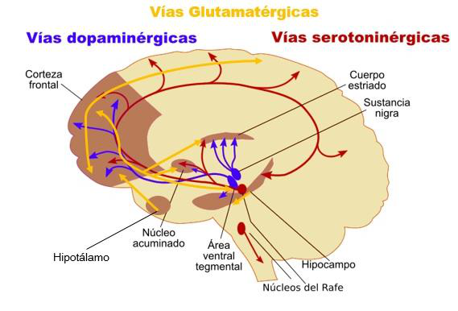
Via dopaminérgica. Quatro circuitos clínicos importantes:
- Nigroestriatal — coordena movimento (extrapiramidal). Lesada no Parkinson; bloqueada por antipsicóticos típicos → SEP iatrogênico.
- Mesolímbica / mesocortical — memória de prazer, atenção, alucinações e delírios. Hiperatividade mesolímbica = sintomas positivos da esquizofrenia.
- Tuberoinfundibular — controla secreção de prolactina (dopamina inibe). Bloqueio D2 → hiperprolactinemia → galactorreia, amenorreia, disfunção sexual.
Via serotoninérgica (5-HT). Corpos celulares nos núcleos da rafe, com projeções difusas. Regula humor, medo/ansiedade, sono, resposta sexual, controle motor, apetite e função gastrointestinal. A maioria dos antidepressivos atua aqui — o que também explica náusea, disfunção sexual e insônia como efeitos adversos clássicos.
Via noradrenérgica. Humor, atenção, energia, tremor, PA, FC, retenção urinária. Antidepressivos noradrenérgicos (IRSN, tricíclicos) ativam essa via — daí benefício na fadiga e na concentração, mas também hipertensão, taquicardia e tremor como adversos.
Vias GABAérgicas (inibitória) e glutamatérgicas (excitatória). O GABA é a principal via depressora do SNC: ansiolítico, anticonvulsivante, hipnótico, inibe memória. É o alvo dos benzodiazepínicos.
Via colinérgica central. Memória, aprendizado, concentração. Sua disfunção no hipocampo e neocórtex está ligada à doença de Alzheimer; aumento nos núcleos da base contribui para o Parkinson.
Via histaminérgica. Sistema reticular ascendente — sono e vigília. Bloqueio H1 é a principal causa de sedação de muitos psicotrópicos (tricíclicos, mirtazapina, hidroxizina).
"Através do conhecimento do neurotransmissor atingido pela medicação, temos uma idéia dos efeitos colaterais possíveis." Esse é o raciocínio que organiza a aula inteira: você não decora efeito adverso — você deduz a partir do receptor que o fármaco toca.
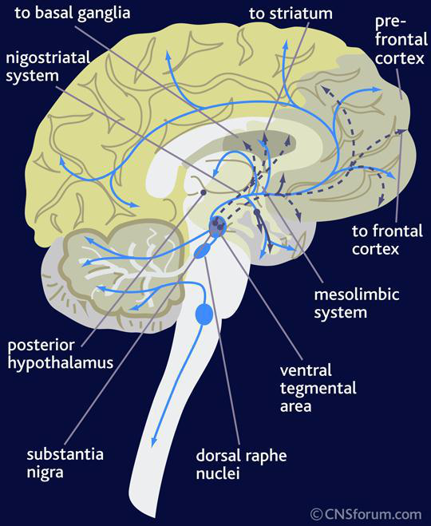
1.2 — Benzodiazepínicos: GABA-A e seus desdobramentos clínicos
Os BZDs lideram as listas de psicotrópicos mais vendidos no Brasil — clonazepam (Rivotril®) na 9ª posição entre todos os medicamentos. Estima-se 50 milhões de usuários diários no mundo, com prevalência mais alta em mulheres acima de 50 anos. São responsáveis por ~50% de toda a prescrição de psicotrópicos.
Mecanismo. Ligam-se a um sítio alostérico do receptor GABA-A (ionotrópico, canal de Cl⁻). Não abrem o canal sozinhos: potencializam a ação do GABA endógeno, aumentando a frequência de abertura do canal. Resultado: maior influxo de Cl⁻, hiperpolarização neuronal, depressão da atividade cortical e límbica.
Propriedades, dose-dependentes em escalada: ansiolítico → anticonvulsivante → hipnótico/indutor de amnésia → relaxante muscular → coma.
Principais agentes: diazepam, lorazepam, clorazepato, alprazolam, bromazepam (ansiolíticos); nitrazepam, flurazepam (hipnóticos); clonazepam, diazepam (anticonvulsivantes); midazolam (indução anestésica); flunitrazepam (Rohypnol — "boa-noite Cinderela").
Farmacocinética. Boa absorção oral, alta ligação a proteínas plasmáticas, acúmulo em tecido gorduroso (lipossolubilidade). Biotransformação hepática via CYP3A4 e CYP2C19. Lorazepam, oxazepam e temazepam fazem só fase II (glicuronidação) — preferidos em idosos, hepatopatas e fumantes porque a meia-vida não se prolonga tanto. Diazepam, clordiazepóxido e flurazepam fazem fase I + II, geram metabólitos ativos e acumulam.
Efeitos adversos. Sonolência diurna (→ quedas, fraturas, acidentes), sonolência rebote, tolerância e dependência, piora de ronco/apneia obstrutiva, malformações congênitas, desinibição comportamental, amnésia retrógrada, alteração da arquitetura do sono com redução do REM (pior consolidação de memória).
Retirada abrupta: confusão, visão borrada, diarreia, anorexia, perda de peso, ansiedade rebote, insônia rebote. Retirada gradual: reduzir ¼ por semana, ou trocar para BZD de meia-vida longa (diazepam, clonazepam) e desmamar em 6-8 semanas.
Antagonista: flumazenil — reverte intoxicação por BZD (útil em PA e UTI).
Interações. Potencializam álcool, opioides, antipsicóticos, anti-histamínicos. Cimetidina, eritromicina, claritromicina, cetoconazol, itraconazol, ritonavir e suco de toranja (grapefruit) inibem CYP3A4 → aumentam concentração do BZD. Barbitúricos induzem CYP → reduzem efeito.
"Não pode ser, nem ter excesso de confiança." Eu vivi isso na pele: residente plantonista, sexta-feira antes da Páscoa, sem intensivista, sem retaguarda. Você precisa saber pedir ajuda. Decorar protocolo não basta — se fosse só protocolo de emergência hipertensiva, paciente teria morrido. Cuidado com o jovem médico que acha que sabe e não chama um especialista. Esse raciocínio vale para qualquer prescrição em SNC: sem retaguarda e sem cautela, você adoece o paciente.
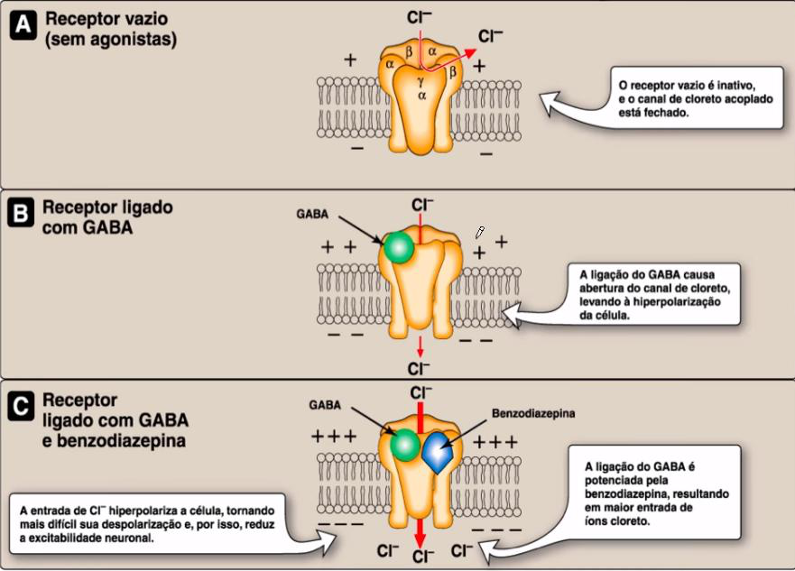
BZD agem rápido (ansiolítico em ~30 min), mas não tratam depressão e geram tolerância e dependência. Por isso a recomendação atual (Bandelow 2012): primeira linha em transtornos ansiosos é ISRS/IRSN — BZD fica como segunda linha, ponte de início, ou para crises agudas. A eficácia a longo prazo dos BZDs é incerta.
1.3 — Transtorno depressivo: epidemiologia e teorias
Prevalência em 12 meses: 6,6%. Prevalência ao longo da vida: 16,2%. Afeta ~340 milhões de pessoas no mundo. Razão mulher:homem = 2:1, diferença que aparece na adolescência. Pico de incidência: 25-30 anos.
A OMS projeta que, em 2030, a depressão será a primeira causa de carga global de doença, ultrapassando doença isquêmica do coração.
Depressão secundária (sempre investigar antes de tratar): hipotireoidismo, Cushing, câncer de pâncreas, Parkinson, hepatite C, HIV/AIDS, LES, AR; medicamentos — corticoides, propranolol, alfa-metildopa, anticoncepcionais, cimetidina.
Diferenciação de tristeza normal: a depressão é mais intensa, mais duradoura, não reage a estímulos positivos, gera prejuízo funcional, piora com o tempo, pode não ter fator causal claro e cursa com lentificação psicomotora.
Fatores agravantes (encaminhar ao psiquiatra): psicose, ideação suicida, sintomas graves, cronicidade, comorbidades, refratariedade prévia.
Hipótese monoaminérgica (Schildkraut 1965, Coopen 1967). Depressão decorre de deficiência funcional de monoaminas — serotonina (5-HT) e noradrenalina (NA), e em menor grau dopamina — nas fendas sinápticas. Base do mecanismo de praticamente todos os antidepressivos atuais.
Limitações da hipótese: a ação bioquímica é imediata (inibição da recaptação ocorre em minutos), mas a resposta clínica leva 2-4 semanas. Metabólitos de NA e 5-HT não mostram padrão consistente. Não é possível prever resposta. Isso levou ao desenvolvimento da teoria neurotrófica/neuroplástica: o efeito antidepressivo verdadeiro decorre de adaptações pós-sinápticas (down-regulation de receptores, aumento de BDNF, neurogênese hipocampal) que demoram semanas.
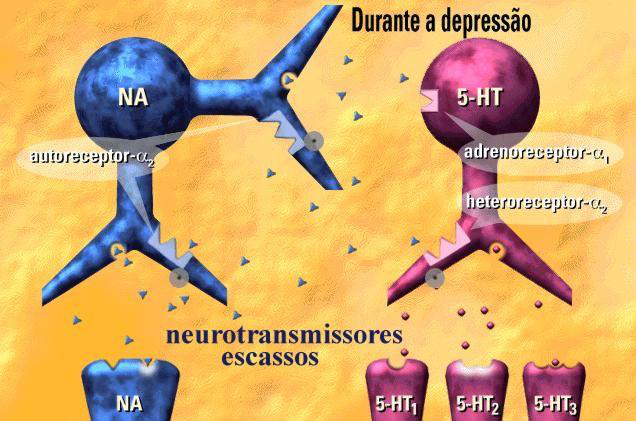
1.4 — ISRS: o pilar da primeira linha
Mecanismo. Inibem seletivamente o transportador SERT, bloqueando a recaptação de serotonina no neurônio pré-sináptico. Pouca afinidade por receptores muscarínicos, histaminérgicos ou α-adrenérgicos — daí o perfil mais limpo que tricíclicos e IMAOs.
Agentes principais:
- Fluoxetina (Prozac®) — meia-vida longa (~2-4 dias) + metabólito ativo norfluoxetina (7-15 dias) → tolerante a esquecimento ocasional; ativadora (pode piorar insônia inicial).
- Sertralina (Zoloft®) — boa em depressão com ansiedade; perfil seguro em cardiopatas; primeira escolha pós-IAM.
- Paroxetina (Aropax®) — mais sedativa e mais anticolinérgica que os outros ISRS; mais síndrome de descontinuação por meia-vida curta; evitar na gestação (categoria D).
- Escitalopram (Lexapro®) — enantiômero S do citalopram; o ISRS mais "limpo", com menos interações.
- Citalopram, fluvoxamina.
Latência terapêutica: 2-4 semanas para efeito antidepressivo pleno. Antes disso, o paciente pode até piorar (ansiedade e insônia nos primeiros dias).
Efeitos adversos. Náusea, cefaleia, insônia (ou sonolência, conforme o agente), disfunção sexual (até 30-50% — anorgasmia, redução de libido, retardo ejaculatório), tremor, sudorese, aumento de peso a longo prazo. Risco de SIADH e hiponatremia em idosos. Pequeno aumento de risco de sangramento (inibem agregação plaquetária).
Síndrome serotoninérgica. Reação grave e potencialmente fatal: hipertermia, rigidez muscular, hiperreflexia, mioclonias, agitação, instabilidade autonômica, colapso cardiovascular. Disparada por excesso de 5-HT — clássica em combinações ISRS + IMAO, ISRS + tramadol, ISRS + linezolida, ISRS + triptanos.
Síndrome de descontinuação. Tontura, parestesia ("choques"), náusea, sintomas tipo gripal, irritabilidade. Pior com paroxetina; rara com fluoxetina (a longa meia-vida faz o desmame por ela mesma).
"Marketing é tudo na vida." Quando a indústria fala seletivo, o aluno acha que o ISRS só atinge o SERT — não é verdade. Ele é mais seletivo que o tricíclico, mas ainda atinge outros receptores. Por isso o paciente continua tendo náusea, insônia, disfunção sexual: tudo é aumento de serotonina nas vias periféricas. Quando seu paciente reclamar desses efeitos, não fala "é raro" — fala "é esperado, vamos ajustar". Isso é honestidade clínica.
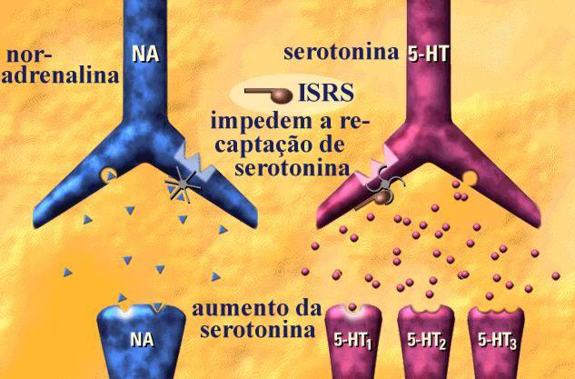
1.5 — IRSN: dupla ação 5-HT + NA
Inibem recaptação de serotonina e noradrenalina (alguns também DA em doses altas). Diferenciam-se dos tricíclicos por não bloquearem muscarínicos, H1 ou α-adrenérgicos — perfil de efeitos adversos mais favorável.
- Venlafaxina — em dose baixa age como ISRS; em dose alta (>150 mg) recruta o componente noradrenérgico. Pode elevar PA dose-dependente. Síndrome de descontinuação intensa (meia-vida curta).
- Desvenlafaxina — metabólito ativo da venlafaxina; perfil parecido, sem precisar do passo metabólico hepático.
- Duloxetina — boa indicação em depressão com dor crônica/neuropática e fibromialgia; também aprovada para incontinência urinária de esforço.
Adversos: náusea (alta no início), boca seca, sudorese, hipertensão (venlafaxina), insônia, disfunção sexual semelhante à dos ISRS.
Cuidado ao prescrever IRSN (dual): antes de receitar venlafaxina, eu sempre pergunto se o paciente é hipertenso. Se for, e eu mexer na noradrenalina, posso descontrolar a pressão. Você não pode chegar e prescrever um dual para qualquer um — tem que conhecer a história clínica. É raciocínio simples, mas muita gente esquece e dispara dose sem rever comorbidade cardiovascular.
1.6 — Tricíclicos: eficazes, mas "sujos"
Os antidepressivos tricíclicos (ADT) inibem a recaptação de NA e/ou 5-HT, mas — diferente dos ISRS — também bloqueiam de forma robusta:
- Receptores muscarínicos M1 → boca seca, visão turva, constipação, retenção urinária, taquicardia, confusão (sobretudo idoso).
- Receptores histaminérgicos H1 → sedação, ganho de peso.
- Receptores α1-adrenérgicos → hipotensão postural.
- Canais de sódio cardíacos → prolongamento de QRS e QTc, arritmias, cardiotoxicidade letal em superdosagem (motivo principal pelo qual saíram da primeira linha — risco em paciente com ideação suicida).
Principais agentes:
- Amitriptilina — mais sedativa, mais anticolinérgica; útil em depressão com insônia, dor crônica, profilaxia de enxaqueca.
- Nortriptilina — metabólito da amitriptilina, menos efeitos adversos, melhor tolerado em idosos entre os ADT.
- Clomipramina — o tricíclico com maior componente serotoninérgico; eficácia clássica no TOC.
- Imipramina — também útil em enurese noturna infantil; pânico.
Não associar com IMAO (risco de síndrome serotoninérgica e crise hipertensiva). Interagem com álcool, anestésicos, anti-hipertensivos, AINEs.
1.7 — IMAOs: poderosos e perigosos
A monoaminoxidase tem duas isoformas: MAO-A (degrada 5-HT, NA, DA, tiramina) e MAO-B (preferência por DA, mais relevante no Parkinson). A inibição da MAO-A é que correlaciona com efeito antidepressivo.
Agentes:
- Fenelzina, tranilcipromina, iproniazida — IMAOs irreversíveis e não-seletivos; ação prolongada (precisam de wash-out de ~2 semanas, ou 5 semanas para fluoxetina antes de trocar).
- Moclobemida — inibidor reversível e seletivo da MAO-A (RIMA); muito mais seguro, menor risco da reação do queijo.
- Selegilina — IMAO-B (usada no Parkinson; em adesivo transdérmico em alta dose tem ação antidepressiva).
Efeitos adversos: hipotensão postural, efeitos atropínicos, ganho de peso, insônia, inquietação, convulsões em superdosagem.
"Reação do queijo". A MAO intestinal normalmente degrada tiramina dos alimentos (queijos envelhecidos, vinho tinto, embutidos, conservas, fava). Com a MAO bloqueada, a tiramina absorvida desloca NA dos terminais simpáticos → crise hipertensiva grave, com risco de AVC. Por isso o paciente em IMAO precisa de dieta restrita à vida — barreira que praticamente tirou os IMAOs irreversíveis do uso de rotina.
Curiosidade que ajuda a fixar a classe: o protótipo dos IMAOs foi a iproniazida, um tuberculostático. Observaram que os pacientes com tuberculose tratados com iproniazida ficavam mais felizes — o bichinho não agia só na micobactéria. Foi assim que se descobriu o efeito antidepressivo da inibição da MAO. Toda vez que você esquecer onde os IMAOs vieram, lembra: começaram tratando tuberculose e acabaram tratando depressão.
1.8 — Antidepressivos atípicos
Grupo heterogêneo, mecanismos distintos entre si:
- Bupropiona — inibe recaptação de NA e DA (sem efeito direto sobre 5-HT). Ativadora, sem disfunção sexual e sem ganho de peso — ótimas vantagens. Indicação extra: cessação do tabagismo. Adversos: insônia, ansiedade, vertigem, e o mais temido — reduz o limiar convulsivo (contraindicada em epilepsia, bulimia/anorexia, abstinência de álcool/BZD).
- Mirtazapina — antagonista α2 pré-sináptico (aumenta liberação de NA e 5-HT) + bloqueio 5-HT2, 5-HT3 e H1. Resultado clínico: sedativa, aumenta apetite e ganha peso, melhora náusea. Excelente em idoso com depressão, insônia e perda de peso. Sem disfunção sexual.
- Trazodona — bloqueio fraco da recaptação de 5-HT + bloqueio 5-HT2A + α1. Muito sedativa: hoje usada principalmente como hipnótico em dose baixa. Raro mas clássico: priapismo (bloqueio α1 em corpo cavernoso).
- Agomelatina — agonista melatoninérgico (MT1, MT2) + antagonista 5-HT2C. Melhora o sono e o humor sem efeitos sexuais nem ganho de peso. Requer monitorar transaminases (hepatotoxicidade rara).
- Vortioxetina — multimodal serotoninérgico (inibe SERT + agonismo/antagonismo em múltiplos subtipos 5-HT). Vantagem clínica: melhora cognitiva (atenção, memória de trabalho). Menos disfunção sexual que ISRS.
- Maprotilina — inibidor seletivo de NA, tetracíclico; perfil semelhante ao ADT, mas com mais convulsões.
A bupropiona é o medicamento da "droga de pícita" — eu uso muito para tratar tabagismo. Mas reflitam: na prática, você substitui um vício pelo outro. O paciente que não conseguia parar com a nicotina passa a depender da bupropiona. Não é cura mágica; é troca de muleta. E nada de associar com paciente bulímico, anoréxico ou em abstinência de álcool — o limiar convulsivo cai e o paciente convulsiona.
A trazodona hoje é usada principalmente para tratar sono, não depressão. Em dose baixa, o paciente dorme — e o efeito hipotensor não atrapalha tanto. Eu prefiro ela à benzodiazepínico em paciente idoso com insônia de manutenção, porque não cria a dependência clássica do BZD e não derruba tanto a arquitetura do sono.
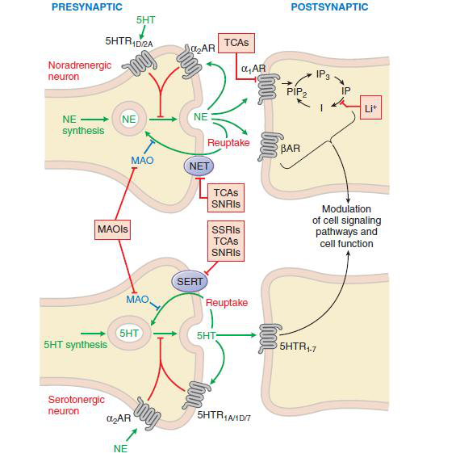
1.9 — Como escolher o antidepressivo
30-50% dos pacientes não respondem ao primeiro AD. As causas mais frequentes: dose subterapêutica, tempo insuficiente, baixa adesão, efeitos adversos intoleráveis.
Critérios da Profa.: eficácia (evidência), mecanismo de ação, tolerabilidade, segurança, facilidade de administração, custo, história pessoal/familiar de resposta, comorbidades. Exemplos práticos:
- Depressão + ansiedade marcada → ISRS (sertralina, escitalopram).
- Depressão + dor crônica/fibromialgia → duloxetina, amitriptilina.
- Depressão + insônia + perda de peso (idoso) → mirtazapina.
- Depressão + tabagismo, sem querer disfunção sexual → bupropiona.
- Depressão + TOC → ISRS em dose alta ou clomipramina.
- Cardiopata → sertralina (mais segura).
E quando não responde após 2-4 semanas em dose adequada? Otimizar dose; trocar de classe; combinar duas classes; potenciar com lítio (1ª escolha de potenciação), T3/T4, buspirona ou antipsicótico atípico; considerar ECT em casos graves refratários.
"É a escolha de Sofia." Quando você prescreve um antidepressivo, não existe escolha perfeita — todo AD tem efeito adverso. Você escolhe aquele cujo efeito adverso é menos comum ou menos prejudicial para aquele paciente específico. Sono de início? Vai num sedativo. Já é gordinho? Foge da mirtazapina. Cardiopata? Sertralina. O melhor medicamento é o que o paciente vai conseguir tomar até o objetivo, sem cair fora pelo efeito adverso.
Depressão pós-parto: regra prática que ninguém ensina. Dentro da mesma família de ISRS, o mecanismo é igual, mas o que muda é quanto passa para o leite. Vou escolher o que tem menor passagem mamária. Não dá para tirar a mãe da amamentação só porque ela ficou deprimida — a gente prescreve pensando na díade. Esse raciocínio vale para gestação também: paroxetina é categoria D, então sai da lista.
"Não é problema meu, minha paga já fez o que eu prescrevi" — frase que ouvi de um colega psiquiatra quando liguei pedindo ajuda para um paciente internado. Vocês todos vão se formar clínicos. Não pode lavar as mãos. Você não é psiquiatra, mas pode ter que iniciar o antidepressivo. Você não é cardiologista, mas pode ter que ajustar pressão. A medicina é continua — o paciente é seu enquanto está com você.
Guidelines internacionais confirmam ISRS, IRSN e bupropiona como antidepressivos de primeira linha no transtorno depressivo maior, com eficácia equivalente entre classes — a escolha deve ser guiada pelo perfil de efeitos adversos e pelo contexto clínico (comorbidades, custo, preferência do paciente). Tricíclicos e IMAOs ficam reservados a casos refratários.[1]
1.10 — Transtorno bipolar
O transtorno bipolar é caracterizado por oscilações entre fases de depressão e fases de elevação patológica do humor (mania ou hipomania). Classificação:
- Bipolar I — pelo menos um episódio de mania completa (com ou sem psicose) ou episódio misto. Depressões frequentemente seguem.
- Bipolar II — episódios de hipomania (mania mais leve, sem prejuízo funcional grave nem psicose) + episódios depressivos. Frequentemente subdiagnosticado.
- Ciclotimia — síndrome parcial mantida por ≥2 anos, oscilações leves; pode preceder ou suceder bipolar/depressivo.
- Distimia — síndrome depressiva parcial crônica, ≥2 anos; precede episódio depressivo maior em 1/3 dos casos.
Cuidado crítico: usar antidepressivo isolado em paciente bipolar pode disparar uma fase de mania ("switch") ou induzir ciclagem rápida. Por isso, antes de prescrever AD, sempre rastreie história de hipomania/mania.
1.11 — Lítio: o estabilizador clássico
Íon monovalente administrado oralmente como carbonato de lítio. Mecanismos múltiplos, ainda não totalmente esclarecidos:
- Aumento da síntese, liberação e transmissão de 5-HT.
- Diminuição da transmissão noradrenérgica e dopaminérgica.
- Inibição da adenilciclase (via desacoplamento de proteínas G).
- Inibição da via de inositol (interfere na formação de IP3 e DAG → modula PKC, excitabilidade neuronal e plasticidade sináptica).
- Substituição do Na⁺ nos canais → altera o gradiente eletroquímico, estabiliza a excitabilidade da célula.
Eficácia. Controla mania e depressão; é profilático do transtorno bipolar; eficaz em 60-80% dos pacientes com mania/hipomania.
Faixa terapêutica: 0,6-1,2 mEq/L — janela estreita. Acima de 1,5 mEq/L já há toxicidade; acima de 2,0 mEq/L, risco de óbito.
Monitoramento. Litemia em 5-7 dias após início ou ajuste; depois trimestral. Antes do tratamento e ao longo do uso: função renal (creatinina, eGFR), TSH (lítio induz hipotireoidismo em até 20%), cálcio (hiperparatireoidismo), ECG em pacientes >40 anos ou cardiopatas.
Efeitos adversos comuns: tremor fino de extremidades, polidipsia, poliúria (diabetes insipidus nefrogênico), ganho de peso, acne, queda de cabelo, hipotireoidismo, leucocitose benigna.
Intoxicação por lítio (litemia >1,5):
- Leve (1,5-2,0): tremor grosseiro, náusea, vômito, diarreia, sonolência, letargia.
- Moderada (2,0-2,5): confusão, disartria, fasciculações, ataxia, hiperreflexia.
- Grave (>2,5): convulsões, coma, arritmias, insuficiência renal aguda; pode ser fatal. Conduta: hidratação, suspender lítio, hemodiálise.
Fatores precipitantes de intoxicação: desidratação, restrição de sódio (a competição Li⁺/Na⁺ no túbulo proximal aumenta reabsorção de lítio quando o Na⁺ está baixo), AINEs (reduzem clearance renal de lítio), IECA/BRA, tiazídicos, febre, dieta hipossódica.
O lítio tem uma propriedade única entre todos os psicotrópicos: efeito antissuicida demonstrado em meta-análises, mesmo independente do controle do humor. Por isso continua sendo a primeira escolha em bipolar com risco suicida — antes de qualquer atalho farmacológico. Janela terapêutica estreita não é desculpa para evitar lítio; é motivo para monitorar bem.
O lítio é praticamente de graça — super barato no SUS. Então pensa: paciente jovem bipolar, com vínculo, que aceita litemia trimestral? Não tem motivo para começar com atípico caro. A janela terapêutica estreita assusta o aluno, mas é só monitorar litemia em 5-7 dias, depois a cada 3 meses. Quem desidrata, faz dieta hipossódica, toma AINE ou tiazídico vai intoxicar — então oriente o paciente sobre cada um desses gatilhos antes da primeira receita.
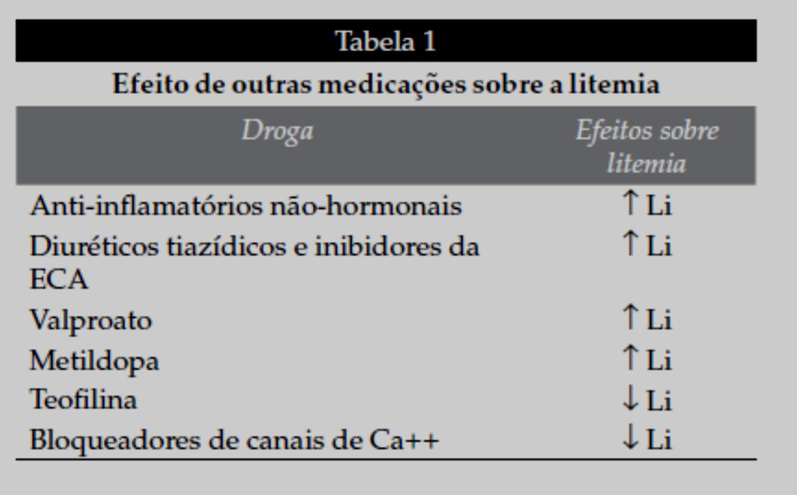
1.12 — Anticonvulsivantes como estabilizadores
Valproato (ácido valpróico / divalproex). Bloqueia canais de Na⁺ + aumenta GABA. Excelente em mania aguda e em ciclagem rápida; nível sérico-alvo 50-125 µg/mL. Adversos: ganho de peso, queda de cabelo, tremor, trombocitopenia, hepatotoxicidade, pancreatite, teratogenicidade alta (defeitos de tubo neural, síndrome fetal do valproato) — evitar em mulher em idade fértil sem contracepção segura. Pode causar hiperamonemia mesmo com TGP/TGO normais.
Carbamazepina. Bloqueia canais de Na⁺. Útil em mania, sobretudo na ciclagem rápida. Adversos: sedação, ataxia, diplopia, hiponatremia (SIADH), discrasias sanguíneas (agranulocitose, anemia aplásica raras), rash — Stevens-Johnson mais frequente em portadores do alelo HLA-B*1502 (asiáticos). Forte indutora do CYP3A4 — diminui efeito de anticoncepcionais, varfarina, muitos outros fármacos (e diminui a própria concentração ao longo do tempo: autoindução).
Lamotrigina. Bloqueia canais de Na⁺ e inibe liberação de glutamato. Vantagem clínica: é o melhor estabilizador para a fase depressiva do bipolar e para profilaxia de novas depressões; pouco eficaz em mania aguda. Adversos: cefaleia, tontura. O ponto crítico é o risco de rash grave (Stevens-Johnson, NET) — por isso a titulação tem que ser lenta (25 mg/d nas primeiras 2 semanas, depois subir gradualmente). Valproato dobra a meia-vida da lamotrigina e exige metade da dose. Carbamazepina, ao contrário, reduz.
Nas guidelines CANMAT/ISBD 2023, na fase depressiva do bipolar I, as opções de primeira linha incluem lítio ou lamotrigina, com a ressalva de que o lítio mantém a vantagem antissuicida única. As atualizações recentes incorporam ainda como monoterapia cariprazina, lumateperona e lurasidona. Antidepressivos em monoterapia não são recomendados no bipolar — devem sempre ser associados a estabilizador, pelo risco de switch maníaco.[1]
1.13 — Antipsicóticos no bipolar
Os antipsicóticos de segunda geração (atípicos) ganharam papel central no manejo do bipolar — tanto em mania aguda quanto em manutenção e em depressão bipolar. Os mais usados:
- Olanzapina — eficaz em mania e manutenção; alta carga metabólica (ganho de peso, dislipidemia, diabetes).
- Quetiapina — única com aprovação robusta tanto para mania quanto para depressão bipolar; muito sedativa em doses baixas.
- Risperidona, aripiprazol — também usados em mania e manutenção.
- Lurasidona — boa em depressão bipolar com perfil metabólico favorável.
- Cariprazina — agonista parcial D3/D2; opção em depressão bipolar.
1.14 — Conectando: o caso da Profa.
Mulher, 30 anos, dois meses de fadiga, anedonia, insônia, anorexia, choro frequente. Sem ideação suicida, sem psicose. Diagnóstico: episódio depressivo maior unipolar (primeiro episódio, sem fatores agravantes — bom prognóstico). Conduta: psicoterapia + fluoxetina.
- Mecanismo: inibe seletivamente o transportador SERT → aumenta 5-HT na fenda → após 2-4 semanas, adaptações pós-sinápticas geram o efeito antidepressivo.
- Efeitos adversos mais prováveis: náusea (primeiros dias), cefaleia, insônia/ativação inicial, disfunção sexual a médio prazo, ganho de peso a longo prazo. Sinais de alarme: agitação extrema, mioclonias, hipertermia → suspeitar síndrome serotoninérgica.
- Orientações: manter por pelo menos 6-12 meses após remissão (e mais tempo se episódios prévios); não interromper abruptamente; sinalizar precocemente qualquer ideação suicida.
"Doutor, você me deu o medicamento e eu fiquei ótimo, nem precisei tomar." Já ouvi isso muitas vezes — e é um indício de algo importante: o acolhimento faz parte do tratamento. Às vezes, só de conversar e escutar, o paciente já se sente melhor. Não substitui a competência farmacológica, mas anda junto. O paciente da psiquiatria carrega estigma — "vai virar maluco" — e quem acolhe bem reduz a barreira para a adesão.
Avisar o paciente antes de começar o ISRS é fundamental: "Meu amigo, não é dipirona. Vai demorar três semanas, um mês, para você sentir efeito." Sem esse alerta, o paciente toma duas semanas, não melhora, acha que o remédio não serve e abandona. Pior: existe relato de aumento de ideação suicida nos primeiros 14 dias — provavelmente porque a energia volta antes do humor melhorar. Por isso a primeira reavaliação tem que ser cedo, em 1-2 semanas, e não em um mês.
Resumo da Aula 01
- → Vias neuronais ditam o perfil de efeito e o perfil de efeito adverso: DA (movimento, prazer, prolactina), 5-HT (humor, sono, sexual, GI), NA (humor, atenção, PA), GABA (inibição/ansiolítico), ACh (memória), H (sono/sedação).
- → BZD potencializam GABA-A (frequência de abertura do canal de Cl⁻): ansiolítico rápido (~30 min), mas tolerância/dependência. Primeira linha em ansiedade hoje = ISRS/IRSN; BZD = ponte de início ou crise. Reversor: flumazenil.
- → Hipótese monoaminérgica explica o alvo dos AD; latência de 2-4 semanas reflete adaptações pós-sinápticas (BDNF, neuroplasticidade).
- → ISRS (fluoxetina, sertralina, escitalopram, paroxetina): primeira linha, perfil limpo. Cuidado com síndrome serotoninérgica, disfunção sexual, descontinuação (paroxetina > outros).
- → Tricíclicos (amitriptilina, nortriptilina, clomipramina, imipramina): bloqueio M1/H1/α1/canais Na⁺ cardíacos → cardiotoxicidade letal em overdose; reservados a refratários e indicações específicas (TOC, dor neuropática).
- → IMAO: "reação do queijo" com tiramina (crise hipertensiva); jamais combinar com ISRS/tricíclicos/tramadol/triptanos (síndrome serotoninérgica).
- → Atípicos: bupropiona (sem disfunção sexual, sem ganho de peso, ↓ limiar convulsivo, antitabagismo); mirtazapina (sedação, apetite, idoso); trazodona (hipnótico, priapismo); vortioxetina (cognitivo).
- → Bipolar: AD isolado pode disparar mania — sempre associar estabilizador. Lítio (faixa 0,6-1,2 mEq/L, antissuicida, monitorar rim/tireoide); valproato (mania, teratogênico); carbamazepina (indutor CYP, SIADH); lamotrigina (depressão bipolar, titulação lenta para evitar Stevens-Johnson).
Referências
- [1] CANMAT and ISBD Guidelines for the Treatment of Bipolar Disorder (2023 Update). Focus / Psychiatry Online. Disponível em: psychiatryonline.org.
§ 02 — Farmacologia dos Distúrbios do Sono e Antipsicóticos
Esta aula tem duas metades que conversam o tempo todo. Primeiro, a fisiologia do sono e os fármacos que induzem ou mantêm o sono — uma história de receptores GABA-A, melatonina e orexina. Depois, a esquizofrenia e os antipsicóticos — uma história sobre dopamina (D2 acima de tudo), serotonina (5-HT2A) e o preço biológico de bloqueá-las. O fio condutor é o mesmo: para tratar um circuito do SNC, você modula o neurotransmissor que o domina.
1. Por que o sono importa — e quando deixa de funcionar
O sono é um estado reversível de quietude e diminuição da responsividade a estímulos, com papel crucial na homeostase do SNC. Não é "desligar o cérebro" — é uma sequência altamente organizada de duas fases que se alternam:
- Sono NREM (não-REM, "sono de ondas lentas") — estágios N1, N2 e N3/N4. Tônus muscular, consumo de O₂, FC, respiração, temperatura, função renal e digestiva tudo reduzido; predomina a atividade parassimpática; sonhos vagos.
- Sono REM ("sono paradoxal" ou "dos sonhos") — tônus muscular praticamente abolido (atonia), mas consumo de O₂, FC, respiração e temperatura aumentados; atividade simpática dominante; ereção peniana/clitoriana; sonhos vívidos e detalhados.
Em uma noite há 4–6 ciclos de cerca de 1,5 h. A privação seletiva de REM produz ansiedade, irritabilidade, perda de concentração — e, se prolongada, transtornos de comportamento.
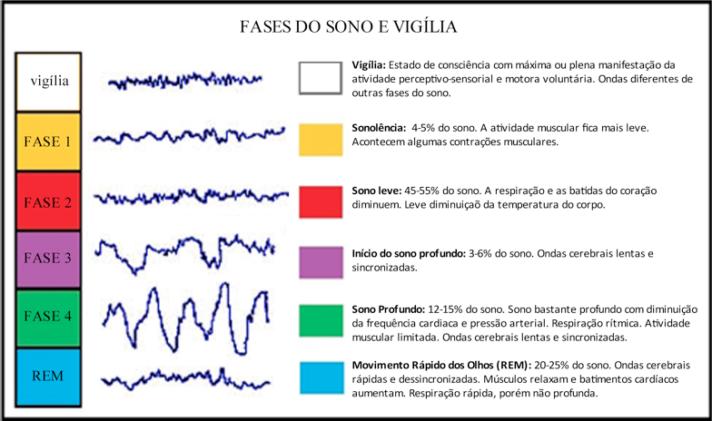
2. O relógio biológico: NSQ, melatonina e adenosina
O núcleo supraquiasmático (NSQ) do hipotálamo é o "relógio mestre". Recebe input retiniano via feixe retino-hipotalâmico (luz como zeitgeber primário) e, à noite, sofre influência da melatonina secretada pela glândula pineal. Outros sinais ajustam o relógio: atividade física, alimentação, glicocorticoides, temperatura ambiente.
Três subdivisões hipotalâmicas comandam o ciclo sono-vigília:
- Hipotálamo anterior — núcleo pré-óptico ventrolateral (VLPO) gabaérgico inibitório: inicia e mantém o sono NREM.
- Hipotálamo posterior — núcleo túbero-mamilar histaminérgico: mantém a vigília.
- Hipotálamo lateral — neurônios produtores de orexina/hipocretina: estabilizam a vigília e impedem transições incontroláveis para o sono.
Durante a vigília, os sistemas aminérgicos (NA do locus ceruleus, 5-HT da rafe), histaminérgicos e orexinérgicos inibem o VLPO. Quando isso se inverte, o VLPO inibe esses núcleos despertadores — é o "flip-flop switch" do sono.
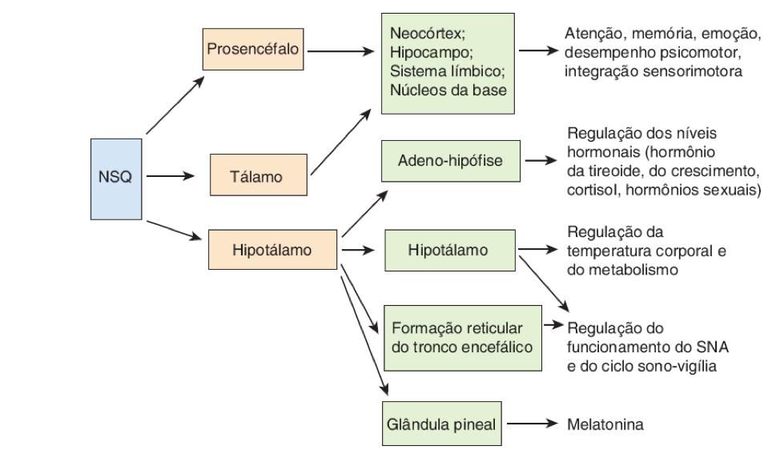
Como a melatonina funciona na prática: de dia, a luz estimula o NSQ, cujos neurônios inibem o núcleo paraventricular; a via simpática para a pineal fica silenciada e a melatonina cai. À noite, o oposto: a pineal recebe estímulo simpático, sintetiza melatonina (a partir do triptofano → serotonina → N-acetilserotonina → melatonina) e induz o sono atuando em receptores MT1 (início) e MT2 (manutenção e ajuste de fase).
Há também a adenosina, subproduto do metabolismo neuronal: acumula-se durante a vigília e, ao atingir certo limiar, "empurra" o sistema para o sono (é nela que a cafeína age como antagonista A1/A2A — por isso desperta).
Entenda o esquema antes de decorar fármacos: promover sono = ativar GABA (VLPO) ou simular melatonina ou bloquear orexina; promover vigília = aumentar dopamina/noradrenalina ou ativar orexina. Cada classe que vamos ver encaixa em um desses três pontos do circuito.
3. Insônia — classificação e diagnóstico
A insônia é o transtorno do sono mais comum (cerca de 21% dos brasileiros referem insônia; 76% têm alguma queixa de sono; predomínio em mulheres). É definida pela presença de ≥3 das seguintes características:
- Dificuldade para iniciar o sono;
- Dificuldade para manter o sono;
- Despertar muito precoce;
- Sono cronicamente não-reparador.
Acompanhada de ao menos uma manifestação diurna: fadiga, déficit de atenção/memória, queda de desempenho, irritabilidade, propensão a acidentes, cefaleia tensional, desconforto GI ou preocupação obsessiva com o sono.
Classificação por momento da noite:
- Insônia inicial — dificuldade de adormecer no começo da noite (típica de ansiedade).
- Insônia intermediária (de manutenção) — múltiplos despertares noturnos.
- Insônia terminal — despertar precoce (clássica da depressão).
Por duração: transitória (<1 semana), curta (1–3 semanas), longa (>3 semanas; cronicidade >3 meses). Por gravidade: leve, moderada, grave. Pode ser primária (idiopática) ou secundária a transtornos psiquiátricos, dor, doença cardiopulmonar, uso/abstinência de substâncias.
A insônia crônica aumenta o risco cardiovascular (HAS) — não é "coisa de manhoso".
4. Hipnóticos benzodiazepínicos (BZD)
Mecanismo: os BZD são moduladores alostéricos positivos do receptor GABA-A. O sítio do BZD fica na interface entre a subunidade α e γ. Ao ligar, o BZD aumenta a frequência de abertura do canal Cl⁻ na presença de GABA — não abre o canal sozinho. Resultado: hiperpolarização da membrana, inibição neuronal, sedação, hipnose, ansiólise, relaxamento muscular e ação anticonvulsivante.
Os efeitos dependem da subunidade α presente no receptor:
- α1 → sedação, hipnose, amnésia anterógrada;
- α2/α3 → ansiólise, relaxamento muscular;
- α5 → memória.
Como os BZD são não-seletivos, ativam todos esses subtipos, explicando o espectro amplo de efeitos (e os adversos).
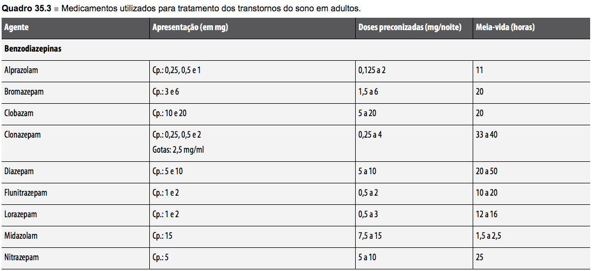
Como escolher um BZD para insônia:
- Curta duração (midazolam, triazolam) — bons para insônia inicial; mínima ressaca matinal; risco de insônia-rebote e amnésia anterógrada.
- Intermediária (lorazepam, estazolam) — bons quando há insônia de manutenção sem necessitar cobertura ansiolítica diurna.
- Longa (diazepam, clonazepam, flurazepam) — úteis quando coexiste ansiedade diurna; risco de sedação residual matinal, acúmulo em idosos e em hepatopatas.
Efeitos adversos: sedação residual, comprometimento psicomotor (cuidado com direção), amnésia anterógrada, tolerância, dependência física, síndrome de abstinência (ansiedade, tremor, convulsões — retirada gradual obrigatória), depressão respiratória (sobretudo com opioides ou álcool), quedas em idosos.
Intoxicação: antídoto é o flumazenil, antagonista competitivo no sítio BZD do GABA-A. Cuidado: pode precipitar convulsões em usuários crônicos.
As diretrizes atuais recomendam BZD e Z-drugs apenas para uso de curto prazo na insônia, evitando especialmente o uso crônico em idosos pelo risco de quedas, fraturas e prejuízo cognitivo[4]. Em idosos, terapia cognitivo-comportamental para insônia (TCC-I) é a primeira escolha; quando hipnótico é necessário, prefere-se agente de curta meia-vida e dose mínima eficaz.
5. Z-drugs (não-benzodiazepínicos)
Zolpidem (Stilnox®), zopiclona/eszopiclona (Imovane®) e zaleplom (Sonata®) são agonistas dos receptores benzodiazepínicos com seletividade para a subunidade α1 do GABA-A. Quimicamente não são BZD (imidazopiridinas, ciclopirrolonas e pirazolopirimidinas), mas se ligam no mesmo sítio.
Como α1 medeia hipnose e amnésia, mas não ansiólise/relaxamento muscular/anticonvulsivante, as Z-drugs têm o perfil "limpo": sedação sem ansiólise marcada, menos relaxamento muscular, menor potencial de dependência (na faixa de doses recomendadas) e menor amnésia/efeitos cognitivos persistentes do que BZD clássicos.
Indicações preferenciais:
- Primeira escolha na insônia de idosos e em pacientes com histórico de abuso de substâncias.
- Para insônia de manutenção (despertares no meio da noite) → zopiclona ou zolpidem (meia-vida maior que zaleplom).
- Zaleplom (ação ultracurta, ~1 h) → indicado para idosos pelo baixíssimo risco de sedação residual matinal.
Efeitos adversos: sonambulismo complexo (cozinhar/dirigir dormindo — descrito sobretudo com zolpidem em altas doses ou associado a álcool), gosto metálico (zopiclona/eszopiclona), tolerância leve, dependência possível.
6. Agonistas melatoninérgicos
Atuam diretamente nos receptores MT1/MT2, mimetizando o sinal endógeno noturno. Não atuam no GABA — logo, não causam dependência, tolerância ou amnésia.
- Melatonina (suplemento) — eficácia modesta; metanálises mostram benefício pequeno em latência e tempo total de sono; útil em insônia por jet lag, transtorno do trabalho em turnos e em crianças com TEA ou comprometimento mental.
- Ramelteon — agonista MT1/MT2 com alta afinidade; útil em insônia de início; principal efeito adverso é sonolência matinal residual.
- Agomelatina — agonista MT1/MT2 e antagonista 5-HT2C; aprovado no Brasil como antidepressivo com efeito hipnótico secundário; exige monitoramento de transaminases.
- Tasimelteon — aprovado para transtorno do ciclo sono-vigília não-24h em cegos.
7. Antagonistas de orexina
A orexina (hipocretina) é o sinal "fique acordado" do hipotálamo lateral. Sua perda causa narcolepsia. Logo, faz sentido bloquear esses receptores para induzir sono fisiológico:
- Suvorexanto (disponível no Brasil) — antagonista duplo OX1/OX2 (DORA). Aprovado pelo FDA em 2014 para insônia. Reduz a latência e melhora a manutenção. Principal efeito adverso: sonolência matinal.
- Lemborexanto — DORA mais recente, perfil similar.
Vantagem teórica: induz sono "permitindo" o adormecer fisiológico em vez de sedar à força — preserva mais a arquitetura do sono que BZD.
8. Outros indutores do sono
- Anti-histamínicos H1 de 1ª geração (difenidramina, doxilamina, prometazina, hidroxizina) — bloqueiam H1 no núcleo túbero-mamilar; sedação por efeito off-target. Limitações: efeito anticolinérgico (boca seca, constipação, retenção urinária, confusão em idosos — listados no Beers Criteria), tolerância rápida.
- Trazodona em baixa dose (25–100 mg) — antidepressivo (SARI) cujo bloqueio H1 e 5-HT2A produz sedação; muito usada off-label em insônia, sobretudo em depressivos. Cuidado com hipotensão ortostática e priapismo (raro).
- Fitoterápicos (valeriana, passiflora, camomila, kava) — metanálise (n=1602) não mostrou diferença vs placebo; valeriana ainda gera tontura, cefaleia e desconforto GI.
O hipnossedativo ideal teria: rápida indução, duração compatível com a necessidade do paciente, preservação da arquitetura do sono, ausência de efeitos adversos/interações e sem tolerância nem dependência. Nenhum existe. Por isso o tratamento da insônia é primeiro comportamental (higiene do sono + TCC-I) e só depois farmacológico, em curtos cursos.
9. Esquizofrenia — fisiopatologia
Esquizofrenia é uma psicose crônica que afeta cerca de 1% da população mundial, com início na 2ª década de vida, mais precoce e mais grave em homens, e curso geralmente crônico. O traço cardinal é o comprometimento do teste da realidade: o paciente faz inferências incorretas sobre a realidade externa e mantém essas inferências mesmo diante de evidências contrárias.
Sintomas positivos (acréscimo ao funcionamento normal):
- Alucinações — percepção sensorial sem estímulo externo (auditivas comentadoras são clássicas).
- Delírios — convicções irredutíveis e incompatíveis com a realidade (persecutórios, místicos, de grandeza).
- Desorganização do pensamento e do comportamento, agitação psicomotora.
Sintomas negativos (déficits):
- Embotamento afetivo, pobreza de fala (alogia), avolição, anedonia, isolamento social, prejuízo do autocuidado.
Bleuler descreveu os 4 "A": Autismo, Ambivalência afetiva, perturbação da Afetividade, perturbação da Associação de pensamento.
Antes de Bleuler, esses pacientes recebiam o rótulo de "demência precoce" — achavam que era um tipo de demência por começar cedo, mas o curso e a história não batem. Eu cheguei a dar aula em hospital psiquiátrico em Sorocaba e no Juquery — a lógica antiga era institucionalizar (sanatórios, fazendas), porque não havia fármaco que controlasse. Hoje o objetivo é exatamente o oposto: manter o paciente na sociedade, em casa, produtivo. Isso muda tudo na escolha do medicamento — precisa funcionar a longo prazo, com efeitos colaterais toleráveis e custo que a família consiga sustentar pela vida toda.
10. Teorias neuroquímicas — onde os fármacos agem
Existem cinco subtipos de receptores dopaminérgicos:
- Família D1 (D1 e D5) — excitatórios, acoplados a Gs (aumentam AMPc);
- Família D2 (D2, D3, D4) — inibitórios, acoplados a Gi (diminuem AMPc).
A dopamina trafega por quatro vias principais no SNC, e o efeito clínico de bloquear D2 depende de em qual via ele bate:
- Via mesolímbica (ATV → núcleo accumbens) — hiperativada na esquizofrenia, responsável pelos sintomas positivos. Bloqueá-la → efeito antipsicótico desejado.
- Via mesocortical (ATV → córtex pré-frontal) — hipoativada na esquizofrenia, responsável pelos sintomas negativos e déficits cognitivos. Bloqueá-la → piora dos sintomas negativos (problema dos típicos).
- Via nigroestriatal (substância negra → estriado) — controla o movimento. Bloqueá-la → sintomas extrapiramidais (SEP).
- Via tuberoinfundibular (hipotálamo → hipófise anterior) — dopamina inibe a liberação de prolactina. Bloqueá-la → hiperprolactinemia.
Teoria dopaminérgica: hiperatividade D2 na via mesolímbica gera os sintomas positivos. Evidências: anfetaminas (que aumentam DA) reproduzem sintomas positivos em pessoas normais; todos os antipsicóticos eficazes bloqueiam D2 com afinidade proporcional à dose clínica.
Teoria serotoninérgica: agonistas parciais de 5-HT2A (LSD, psilocibina) reproduzem alucinações; antipsicóticos atípicos têm maior afinidade por 5-HT2A que por D2 — é isso que explica o perfil "atípico".
Teoria glutamatérgica: hipoatividade glutamatérgica (especialmente em receptores NMDA) no córtex frontal e hipocampo; antagonistas NMDA (cetamina, PCP) produzem quadro semelhante à esquizofrenia, com sintomas positivos e negativos.
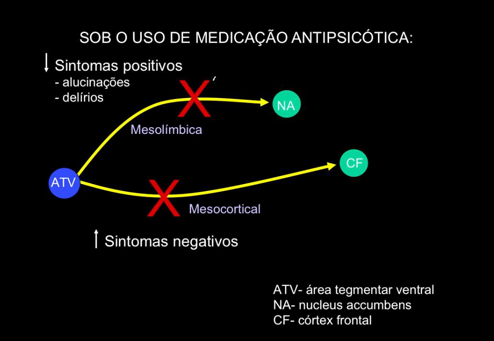
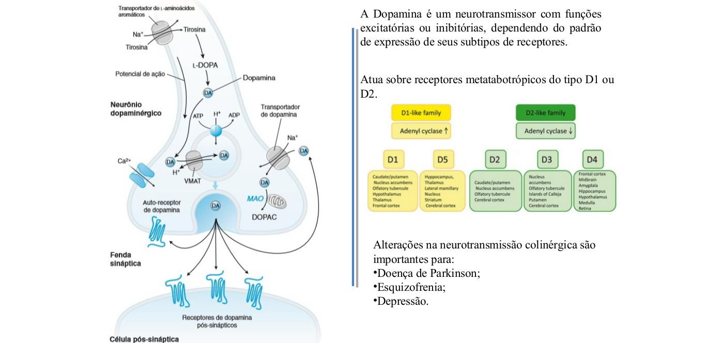
11. Antipsicóticos de 1ª geração (típicos / convencionais)
Surgiram nas décadas de 50–60 (clorpromazina abriu a era moderna). São antagonistas competitivos D2, mais eficácia nos sintomas positivos, com ação adicional bloqueadora em receptores muscarínicos (M1), α1-adrenérgicos e H1. A classificação por potência reflete a afinidade D2 — e prevê o perfil de efeitos adversos.
Subdivisão clínica:
- Incisivos (alta potência D2): haloperidol, flufenazina, pimozida, penfluridol, pipotiazina. Pouca sedação, pouco efeito autonômico, muito SEP e muita hiperprolactinemia. Removem bem alucinações e delírios.
- Sedativos (baixa potência D2, alto bloqueio M1/α1/H1): clorpromazina, levomepromazina, tioridazina, trifluoperazina, sulpirida. Mais sedação, hipotensão ortostática, boca seca, constipação, ganho de peso; menos SEP. Bons para agitação psicomotora.
Reações adversas dos típicos:
- Sintomas extrapiramidais (SEP) — via nigroestriatal:
- Distonia aguda: espasmos musculares de face, pescoço, língua, costas; crises oculogíricas. Pico em 1–5 dias. Tratamento: anticolinérgicos (biperideno) ou difenidramina IM.
- Acatisia: inquietação motora subjetiva, "necessidade de ficar em movimento". Pico em 5–60 dias. Tratamento: reduzir dose, propranolol, BZD, anticolinérgicos.
- Parkinsonismo: acinesia, rigidez, fácies em máscara, marcha arrastada. Pico em 5–30 dias; ~15% dos pacientes. Tratamento: ajuste de dose, anticolinérgicos (NÃO levodopa).
- Discinesia tardia: movimentos coreoatetósicos involuntários de face, língua, tronco; aparece após meses-anos de uso. Prevalência 15–35%. Mecanismo: upregulation e supersensibilização de receptores D2 estriatais. Anti-parkinsonianos AGRAVAM. Prevenção: usar dose mínima, preferir atípicos.
- Síndrome neuroléptica maligna (SNM) — mortalidade até 10%. Tétrade: hipertermia, rigidez "em cano de chumbo", disautonomia (PA instável, taquicardia), alteração da consciência. Laboratório: CK muito elevada (rabdomiólise), leucocitose. Tratamento: suspender o antipsicótico, suporte intensivo, dantrolene (relaxante muscular) e bromocriptina (agonista D2).
- Hiperprolactinemia (via tuberoinfundibular bloqueada): amenorreia, galactorreia, ginecomastia, infertilidade, queda de libido.
- Efeitos anticolinérgicos (M1): boca seca, constipação, retenção urinária, perda de acomodação visual, confusão em idosos — clorpromazina, levomepromazina, tioridazina.
- Bloqueio α1: hipotensão ortostática, disfunção erétil, retardo ejaculatório.
- Bloqueio H1: sedação e ganho de peso.
- Discrasias sanguíneas: leucopenia com clorpromazina (1:10.000); icterícia colestática.
- Prolongamento de QT: especialmente tioridazina e pimozida — risco de torsades de pointes.
- Cutâneo: fotossensibilidade e dermatite por clorpromazina.
Você vai aprender a reconhecer a discinesia tardia no olhar: aquela "careta característica" de mexer a boca, estalar a língua, dar de carinha — às vezes a gente vê na rua, acha que é "cara de maluco", e na verdade é efeito adverso de antipsicótico que ninguém tirou. Outro termo de enfermaria: "paciente impregnado". Significa que está com SEP por dose alta. A conduta é reduzir o antipsicótico — mas se reduzir demais, voltam os sintomas positivos. O macete prático é associar prometazina, um anti-H1 com ação anticolinérgica central que segura a impregnação sem precisar mexer agressivamente na dose.
Para fixar o mecanismo do D2: a metoclopramida que vocês usam para enjoo é antagonista D2 igual ao haloperidol — só que atravessa pouco a barreira hematoencefálica, então age no trato digestório (acelera o esvaziamento gástrico) sem causar psicose. Em criança, contudo, a barreira ainda é imatura: metoclopramida pode dar SEP. Por isso, em pediatria, prefere-se bromoprida ou, em UPS sem alternativa, ondansetrona. É a mesma família de receptor, mas o destino do fármaco é o que muda.
Sobre a hiperprolactinemia: muita paciente em uso crônico de antipsicótico engravida achando que estava "protegida" pela amenorreia. Não funciona assim — a prolactina alta diminui a fertilidade, mas não zera. Avise a paciente: se você não quer engravidar, mantenha contracepção mesmo sem menstruar. Já vi caso de gravidez no consultório por esse mal-entendido.
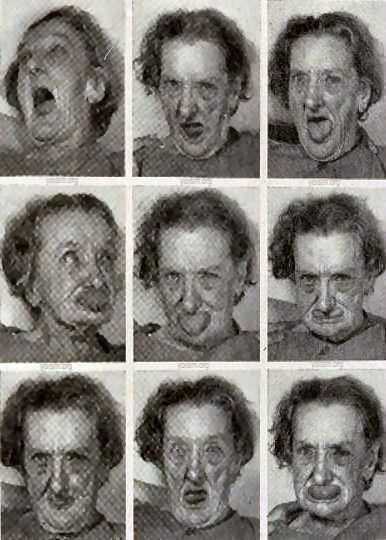
12. Antipsicóticos de 2ª geração (atípicos)
O grande pulo conceitual: antagonismo simultâneo de D2 e 5-HT2A (com afinidade pelo 5-HT2A frequentemente maior que pelo D2). A serotonina via 5-HT2A normalmente inibe a liberação de dopamina; bloquear 5-HT2A "desinibe" a DA na via nigroestriatal e na mesocortical — daí menos SEP e melhora dos sintomas negativos. Na via mesolímbica, o bloqueio D2 ainda controla os sintomas positivos.
Perfil-resumo dos principais:
- Clozapina (Leponex®) — protótipo. Bloqueio D1+D2 mais 5-HT2A, M1, α1, H1. Praticamente não causa SEP nem hiperprolactinemia. Eficaz em refratários. Limitações: agranulocitose (1–2% dos pacientes), miocardite, convulsões dose-dependentes, sialorreia, síndrome metabólica importante.
- Olanzapina (Zyprexa®) — perfil farmacológico amplo (D2, 5-HT2A, M, H1, α1). Excelente eficácia, mas maior ganho de peso e dislipidemia entre os atípicos.
- Risperidona (Risperdal®) — bloqueio D2 + 5-HT2A + α2 + H1. Em doses ≥6 mg perde a "atipicidade" e produz SEP/hiperprolactinemia (é o atípico que mais eleva prolactina).
- Paliperidona — metabólito ativo da risperidona; perfil semelhante; disponível em formulações de liberação prolongada injetáveis (mensal/trimestral).
- Quetiapina (Seroquel®) — afinidade D2 baixa e dissociação rápida, alta H1 (muito sedativa); útil em transtorno bipolar e em insônia comórbida; pouco SEP.
- Ziprasidona — perfil metabólico mais favorável que olanzapina, mas prolonga QT — checar ECG.
- Amisulprida — bloqueio D2/D3 seletivo; eficaz em sintomas negativos em baixas doses.
Trade-off geral dos atípicos: menos SEP, mais síndrome metabólica — ganho de peso, dislipidemia, resistência insulínica, diabetes tipo 2. Monitorar peso, perfil lipídico e glicemia.
A amisulprida tem um uso clínico curioso que vocês vão encontrar: gestante com hiperêmese. Por ter ação periférica mais marcada que central (lembra a metoclopramida?), em dose baixa serve como antiemético em maternidade, evitando o haloperidol no SNC do feto. É o mesmo princípio: receptor igual, distribuição diferente, indicação diferente.
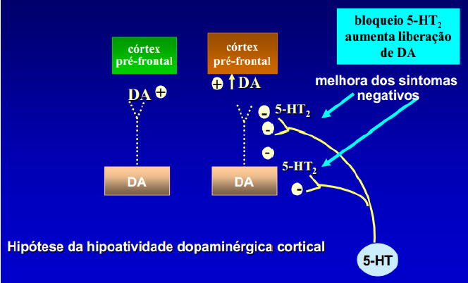
13. Antipsicóticos de 3ª geração
São agonistas parciais de D2 (e parciais 5-HT1A, antagonistas 5-HT2A). Atuam como estabilizadores dopaminérgicos: em sinapses com DA alta (mesolímbica), comportam-se como antagonistas e reduzem o sinal; em sinapses com DA baixa (mesocortical, nigroestriatal, tuberoinfundibular), funcionam como agonistas parciais, fornecendo um sinal mínimo. Resultado: muito pouco SEP, pouquíssima hiperprolactinemia, baixo ganho de peso.
- Aripiprazol — protótipo. Pode causar acatisia (efeito adverso mais frequente).
- Brexpiprazol, cariprazina — gerações mais recentes; perfis semelhantes com diferenças sutis de afinidade.
Para vocês não decorarem nomes: o jeito de saber rapidamente a que geração um antipsicótico pertence é o sufixo. Termina em -azina, -idol ou -zida? Quase sempre 1ª geração (clorpromazina, levomepromazina, tioridazina, haloperidol, pimozida). Termina em -apina ou -idona? Atípico de 2ª geração (clozapina, olanzapina, quetiapina, risperidona, paliperidona). Termina em -prazol? 3ª geração, agonista parcial (aripiprazol, brexpiprazol, cariprazina). Não é regra absoluta, mas resolve 90% das questões de prova no chute educado.
14. Escolha do antipsicótico na prática
As principais diretrizes atuais (APA 2020/2024 e Neuropsychopharmacology Reports 2022) recomendam antipsicóticos de 2ª geração como primeira escolha na esquizofrenia, principalmente para minimizar o risco de SEP e discinesia tardia[4][5]. A eficácia, contudo, é equivalente entre 1ª e 2ª geração para sintomas positivos — exceto pela clozapina, que é o único agente com eficácia comprovadamente superior em esquizofrenia resistente ao tratamento (após falha de ≥2 antipsicóticos em doses e tempos adequados)[6]. A escolha individual considera perfil de efeitos adversos, comorbidades, adesão e via de administração (formulações depot LAI melhoram adesão).
Cenários comuns:
- Crise aguda com agitação: haloperidol IM (com prometazina para reduzir SEP agudos) ou olanzapina IM. Quando há agitação intensa em emergência, antipsicóticos sedativos (clorpromazina, levomepromazina) também são opção.
- Primeiro episódio psicótico: atípico oral (risperidona, olanzapina, aripiprazol) em monoterapia, dose mínima eficaz.
- Esquizofrenia refratária (falha de ≥2 antipsicóticos): clozapina[6], com monitoramento hematológico semanal.
- Má adesão: formulações depot (risperidona LAI, paliperidona mensal/trimestral, haloperidol decanoato, aripiprazol mensal).
- Idosos: evitar típicos sedativos e clozapina; preferir baixa dose de atípico com baixo perfil anticolinérgico (risperidona em dose baixa, quetiapina). Alerta de aumento de mortalidade em demência para todos os antipsicóticos.
- Gestação: dados mais robustos com haloperidol, olanzapina e quetiapina; risco/benefício individualizado; evitar suspender abruptamente.
Quando o paciente chega realmente agitado na emergência — pegando, batendo, fugindo — converse com ele primeiro, mas saiba que conversa raramente resolve. A dupla clássica do pronto-socorro é haloperidol IM + prometazina IM: o haldol corta os sintomas positivos e a prometazina protege contra distonia aguda e ainda traz sonolência. Se for primeiro episódio e o paciente não for esquizofrênico, às vezes meio ampola de haldol já segura. Se for um esquizofrênico de longa data, vai precisar da dose cheia.
Meu raciocínio para escolher entre olanzapina e quetiapina no dia a dia: para paciente muito agitado, prefiro a quetiapina porque ela é mais sedativa e existe em comprimidos de várias dosagens — dá para titular fininho até achar a dose que tranquiliza sem fazer o paciente dormir o dia inteiro. O problema é o custo: quetiapina é bem mais cara que olanzapina. Olanzapina é potente e mais barata, mas o ganho de peso e a dislipidemia são reais — em paciente jovem que vai tomar a vida toda, isso pesa. Aripiprazol é o "ideal" (pouco SEP, pouco metabólico), mas o preço inviabiliza para a maioria. Custo, no SUS e no consultório, é farmacologia também.
15. Conexões entre os temas
O fio entre as duas metades da aula:
- Sedação compartilhada: antipsicóticos sedativos (clorpromazina, quetiapina) e BZD usam mecanismos diferentes (H1/α1 vs. GABA-A), mas convergem em "diminuir a vigília". Por isso a quetiapina em baixa dose é usada off-label para insônia em transtorno bipolar e em depressivos — assim como a trazodona.
- Dopamina ↔ sono: o sistema dopaminérgico participa da vigília; antipsicóticos sedativos contribuem para sedação também por reduzir a transmissão dopaminérgica ascendente.
- Histamina: o núcleo túbero-mamilar é alvo de anti-H1 (induz sono) e de muitos antipsicóticos (sedação e ganho de peso).
Decore esta heurística: quanto mais um antipsicótico bloqueia D2 puro, mais sintomas positivos ele tira, mas mais SEP causa. Quanto mais ele bloqueia também 5-HT2A, menos SEP — em troca de síndrome metabólica. Quanto mais ele é agonista parcial D2, menos ambos os problemas — em troca de acatisia. Isso explica 80% das decisões clínicas.
Checkpoint § 02
- → Sono alterna NREM (ondas lentas, parassimpático) e REM (paradoxal, simpático, atonia, sonhos vívidos); VLPO inicia o sono, NTM/orexina/aminérgicos sustentam a vigília — o "flip-flop switch".
- → BZD = moduladores alostéricos positivos do GABA-A; ação dependente da subunidade α (α1 hipnose, α2/α3 ansiólise/relaxamento); divididos por meia-vida (curta/intermediária/longa) e antídoto é flumazenil.
- → Z-drugs (zolpidem, zopiclona, eszopiclona, zaleplom) = seletividade α1 → hipnose com menos ansiólise/dependência; preferidos em idosos e em risco de abuso.
- → Agonistas melatoninérgicos (ramelteon, agomelatina) e antagonistas de orexina (suvorexanto, lemborexanto) atuam fora do GABA — sem dependência, perfil de segurança melhor.
- → Esquizofrenia: hiperatividade D2 mesolímbica (sintomas positivos) + hipoatividade mesocortical (sintomas negativos); teorias serotoninérgica (5-HT2A) e glutamatérgica (hipofunção NMDA) complementam o modelo.
- → Típicos (haloperidol, clorpromazina) = D2 puro → eficácia em positivos, mas muito SEP, hiperprolactinemia e risco de SNM (suspender + dantrolene + bromocriptina).
- → Atípicos (clozapina, olanzapina, risperidona, quetiapina) = D2 + 5-HT2A → menos SEP, mais síndrome metabólica; clozapina é único superior em refratários (agranulocitose 1–2% → leucograma semanal nas 18 primeiras semanas).
- → 3ª geração (aripiprazol, brexpiprazol) = agonistas parciais D2 → "estabilizadores"; pouco SEP, pouca prolactina, principal RAM é acatisia.
Anticonvulsivantes & Doenças Neurodegenerativas (Parkinson, Alzheimer)
A aula maior do bloco: três alvos, três fisiopatologias, três arsenais terapêuticos. A linha de raciocínio é sempre a mesma — onde está o desequilíbrio sináptico? — e a farmacologia se desdobra a partir daí.
Parte 1 — Epilepsia e Anticonvulsivantes
Definições: convulsão, crise e epilepsia
Antes de qualquer farmacologia é preciso separar três palavras que o leigo usa como sinônimos:
- Convulsão — disparo rítmico, desordenado e sincrônico de uma população de neurônios. É um fenômeno eletrofisiológico, não uma doença.
- Crise epiléptica — o evento clínico que decorre desse disparo: sinais e sintomas variam de acordo com a região cortical envolvida (motora, sensitiva, autonômica, psíquica).
- Epilepsia — a doença, caracterizada pela ocorrência periódica e imprevisível de crises não provocadas. O diagnóstico é clínico (recorrência sem fator desencadeante reversível).
Epidemiologia: prevalência mundial de 0,5–1%, sendo que cerca de 30% dos pacientes são refratários mesmo com tratamento adequado — esse número justifica a busca constante por novos fármacos.
Fisiopatologia: o foco hiperexcitável
Em algum ponto do córtex existe um grupo de neurônios que dispara fora de hora. A explicação molecular sempre converge para dois eixos:
- Excesso de excitação — glutamato (principalmente via receptores NMDA e AMPA) entra demais ou em excesso.
- Pouca inibição — GABA (canais de cloreto, hiperpolarizantes) não consegue frear.
Quando esse foco dispara repetidamente, há um fenômeno conhecido como kindling: cada crise "facilita" a próxima, modificando plasticamente as sinapses até que o limiar fique cronicamente baixo. Daí a regra clínica do professor: uma crise tende a chamar outra, e quanto mais cedo se estabiliza o limiar, melhor o prognóstico de longo prazo.
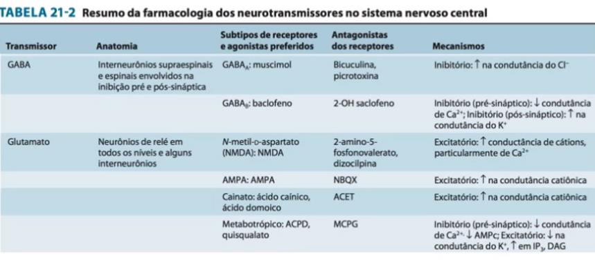
Classificação ILAE — tipos de crise
A classificação atual da ILAE divide as crises pelo ponto de início:
- Focais — surgem em uma rede limitada a um hemisfério.
- Focais com consciência preservada (antiga "parcial simples") — paciente lúcido.
- Focais com comprometimento da consciência (antiga "parcial complexa") — automatismos, olhar parado.
- Podem evoluir para tônico-clônica bilateral (generalização secundária).
- Generalizadas — engajam ambos os hemisférios desde o início.
- Tônico-clônica (grande mal): perda de consciência, fase tônica seguida de clônica.
- Ausência (pequeno mal): "apagões" de 5–15 s, típicos da infância, EEG com complexos ponta-onda 3 Hz.
- Mioclônica: abalos breves e súbitos.
- Atônica: perda súbita do tônus — quedas.
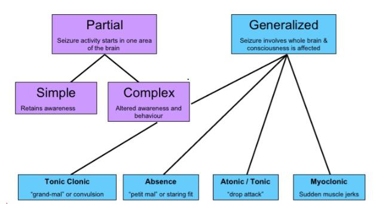
Quatro mecanismos farmacológicos — o mapa mestre
Decorar fármaco por fármaco é insano. O atalho é entender as quatro estratégias:
- Bloqueio dos canais de Na⁺ dependentes de voltagem — impede potenciais de ação repetitivos sustentados no foco e o alastramento da descarga. Fenitoína, carbamazepina, oxcarbazepina, lamotrigina, lacosamida.
- Bloqueio de canais de Ca²⁺ tipo T — os canais T no tálamo geram as descargas rítmicas das crises de ausência. Etossuximida bloqueia especificamente o tipo T.
- Potencialização do GABA — quatro submecanismos:
- (a) facilitação do canal de Cl⁻ no GABAA: benzodiazepínicos aumentam a frequência de abertura; barbitúricos (fenobarbital) aumentam a duração de abertura.
- (b) inibição da GABA-transaminase: valproato, vigabatrina.
- (c) inibição do transportador GAT-1 (recaptação): tiagabina.
- (d) aumento da liberação (mecanismo não totalmente esclarecido, via subunidade α2δ dos canais de Ca²⁺ voltagem-dependentes): gabapentina, pregabalina.
- Modulação da liberação de glutamato / proteína sináptica SV2A — lamotrigina também reduz liberação de glutamato; levetiracetam se liga à proteína vesicular sináptica SV2A, modulando a liberação de neurotransmissores.
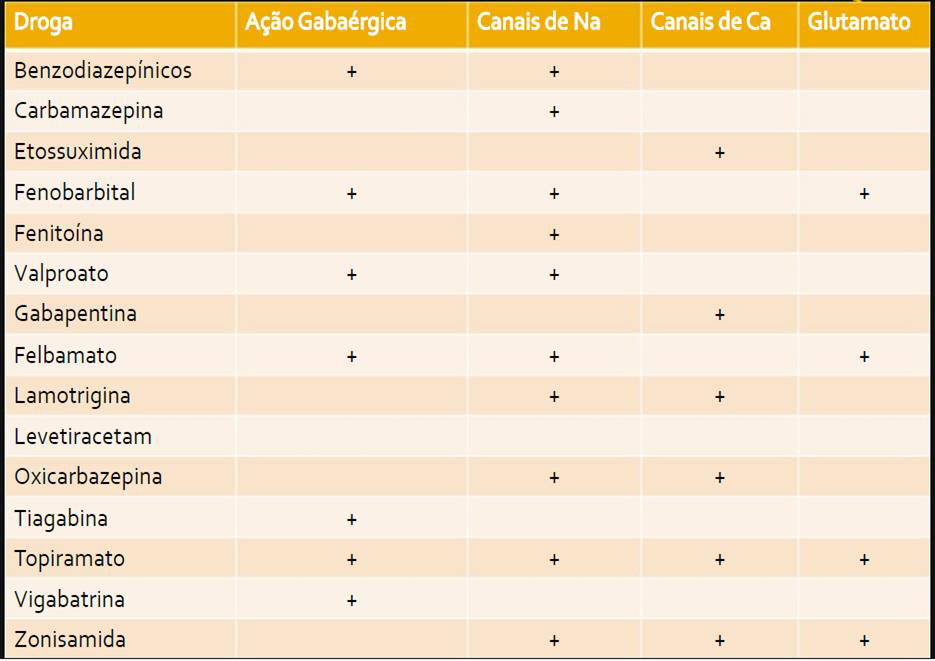
O raciocínio do professor: "Não tente decorar 20 fármacos isolados. Pergunte-se primeiro: qual o mecanismo dominante? Se é canal de Na⁺, automaticamente vem o pacote de efeitos adversos da classe (ataxia, diplopia, hiponatremia quando há ação na ADH). Se é potencialização GABA, vem sedação e tolerância. O nome do fármaco é só a etiqueta — o mecanismo é a chave que abre a porta da prova."
Fármacos individuais — pontos críticos de prova
Fenitoína (hidantoína)
- Mecanismo: bloqueio de canais de Na⁺ dependentes de voltagem em estado inativado (uso-dependente — atua mais nos neurônios que disparam muito).
- Indicações: crises focais e generalizadas tônico-clônicas; status epilepticus (IV).
- Cinética não-linear (de ordem zero) — pequenos aumentos de dose geram aumentos desproporcionais do nível sérico. É o ponto clássico de prova.
- Indutor enzimático potente (CYP3A4, 2C9, 2C19) → reduz eficácia de anticoncepcionais hormonais, varfarina, outros anticonvulsivantes.
- RAM crônicas: hiperplasia gengival, hirsutismo, traços faciais grosseiros, neuropatia periférica, osteomalácia, anemia megaloblástica (interfere com folato).
- RAM agudas: nistagmo, ataxia, diplopia (dose-dependentes).
Carbamazepina (dibenzazepina)
- Mecanismo: bloqueio de canais de Na⁺.
- Indicações: crises focais (1ª linha clássica), neuralgia do trigêmeo, transtorno bipolar.
- Auto-indução do CYP3A4 — meia-vida cai nas primeiras semanas, exigindo ajuste de dose.
- RAM: hiponatremia por SIADH-like, leucopenia, anemia aplásica (rara), sedação, ataxia.
- Reação cutânea grave: Stevens-Johnson / NET associada ao alelo HLA-B*1502 (alta prevalência em asiáticos — guideline recomenda triagem antes do início).
Oxcarbazepina
- Análogo cetônico da carbamazepina — mesmo mecanismo, mas não sofre auto-indução e tem menos interações.
- Hiponatremia ainda mais frequente que com carbamazepina.
- Risco menor (mas ainda presente) de reação cutânea grave.
Ácido valproico (valproato)
- Mecanismo múltiplo: bloqueio de Na⁺ + inibição da GABA-transaminase + bloqueio de canais de Ca²⁺ tipo T → cobre crises focais e generalizadas (incluindo ausência e mioclônicas).
- Inibidor enzimático (oposto da fenitoína e carbamazepina).
- RAM críticas: hepatotoxicidade (especialmente em crianças < 2 anos), pancreatite, trombocitopenia, ganho de peso, alopecia, tremor.
- Teratogenicidade alta: defeitos de tubo neural, dismorfismos faciais, déficit cognitivo no neurodesenvolvimento. Evitar em mulheres em idade fértil sempre que possível.
Lamotrigina
- Mecanismo: bloqueio de Na⁺ + redução da liberação de glutamato.
- Ampla cobertura (focais, generalizadas, bipolar fase depressiva).
- Boa tolerabilidade em geral — porém exige titulação lenta para evitar rash (incluindo Stevens-Johnson). Se valproato estiver associado, titular ainda mais devagar (valproato inibe a glicuronidação da lamotrigina, dobrando seus níveis).
Levetiracetam
- Mecanismo único: ligação à proteína vesicular sináptica SV2A, modulando a liberação de neurotransmissores.
- Vantagens: poucas interações medicamentosas, excreção renal, sem necessidade de dosagem sérica de rotina, escala rápida.
- RAM marcante: alterações comportamentais e de humor (irritabilidade, agressividade, depressão) — perguntar diretamente ao paciente em retornos.
Fenobarbital (barbitúrico)
- Mecanismo: potencializa GABA aumentando a duração da abertura do canal de Cl⁻.
- Uso amplo histórico — barato; ainda primeira linha no neonato.
- RAM: sedação importante, déficit cognitivo, tolerância, dependência. Indutor enzimático potente.
Etossuximida (succinimida)
- Mecanismo: bloqueio seletivo dos canais de Ca²⁺ tipo T no tálamo.
- Indicação: crises de ausência — primeira linha; não cobre tônico-clônicas.
- RAM: náuseas, sonolência, raramente discrasias.
Gabapentina e pregabalina
- Mecanismo: ligação à subunidade α2δ dos canais de Ca²⁺ voltagem-dependentes, reduzindo liberação de neurotransmissores excitatórios.
- Indicações principais hoje: dor neuropática, ansiedade generalizada (pregabalina). Em epilepsia: adjuvante em focais.
- RAM: sonolência, tontura, ganho de peso, edema periférico.
Topiramato
- Mecanismos múltiplos: Na⁺, GABAA, inibição da anidrase carbônica, antagonismo glutamato.
- Indicações: crises focais e generalizadas; profilaxia de enxaqueca.
- RAM marcantes: litíase renal, parestesias, perda de peso, déficit cognitivo ("dopa-mato"), glaucoma agudo de ângulo fechado, acidose metabólica hiperclorêmica.
Vigabatrina e tiagabina
- Vigabatrina: inibe GABA-transaminase (irreversível). Risco de defeito permanente do campo visual — uso restrito (espasmos infantis).
- Tiagabina: inibe o transportador GAT-1.
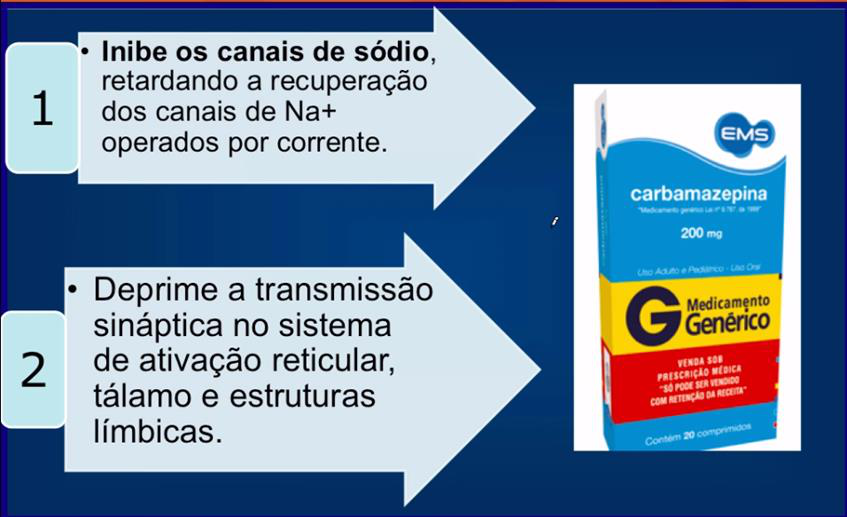
Atualização de prática: o NICE NG217 (2022) e o AAN Practice Guideline posicionam lamotrigina e levetiracetam como primeira linha em crises focais por melhor tolerabilidade e menos interações, com oxcarbazepina e carbamazepina como alternativas válidas [7][9]. Em crises generalizadas tônico-clônicas, o valproato mantém a melhor eficácia em homens, mas deve ser evitado em mulheres em idade fértil pela teratogenicidade — lamotrigina ou levetiracetam são alternativas preferenciais [17].
Status epilepticus — a emergência
Definição operacional: crise contínua por mais de 5 minutos, ou duas crises sem recuperação de consciência entre elas. Cada minuto de crise prolongada aumenta o risco de lesão neuronal irreversível — é tempo dependente.
Algoritmo escalonado:
- 0–5 min — Estabilização: ABC, glicemia capilar, acesso venoso, oxigênio.
- 5–20 min — Primeira linha: benzodiazepínico IV (lorazepam, diazepam) ou IM (midazolam quando sem acesso).
- 20–40 min — Segunda linha: fosfenitoína/fenitoína IV, valproato IV ou levetiracetam IV (os três são equivalentes — ESETT trial).
- ≥ 40 min — Status refratário: anestesia geral em UTI (midazolam, propofol ou pentobarbital em infusão contínua, EEG contínuo).
A AAN Practice Guideline reforça que BZD IV é a primeira linha indiscutível no status — atrasar a primeira dose é o erro mais frequente e mais lesivo. Na segunda linha, o ensaio clínico ESETT mostrou equivalência entre fenitoína/fosfenitoína, valproato e levetiracetam IV em controle de crise [9].
Considerações práticas
- Gestação: evitar valproato sempre que possível; preferir lamotrigina ou levetiracetam; suplementar ácido fólico em alta dose.
- Indução enzimática: fenitoína, carbamazepina, fenobarbital e topiramato reduzem eficácia de anticoncepcionais hormonais — necessário método de barreira ou DIU.
- Retirada: nunca abrupta — risco de rebote e até status. Reduzir gradualmente após 2–5 anos sem crises, sob orientação especializada.
- Monoterapia sempre é o objetivo; politerapia só quando duas monoterapias falharam.
Parte 2 — Doença de Parkinson
Fisiopatologia
A doença de Parkinson é um distúrbio neurodegenerativo do movimento, lentamente progressivo, decorrente da degeneração dos neurônios dopaminérgicos da substância negra pars compacta, que projetam para o estriado (via nigroestriatal). O resultado é a queda progressiva da dopamina estriatal — quando essa queda chega a cerca de 80%, surgem os sintomas motores.
O achado histopatológico característico é o acúmulo intracelular de α-sinucleína formando os corpos de Lewy. A perda de dopamina rompe o equilíbrio dopamina (inibitória) ↔ acetilcolina (excitatória) no estriado, gerando hiperatividade colinérgica relativa.
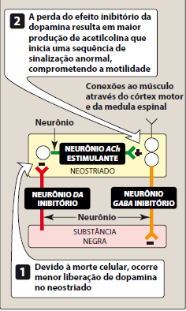
Sintomas cardinais (a tétrade clássica)
- Tremor de repouso — movimento rítmico de pronação-supinação ("contar moedas"); diminui com movimento voluntário e aumenta com estresse ou concentração.
- Rigidez — resistência passiva ao movimento articular ("roda denteada"); reflete inibição falha do antagonista muscular.
- Bradicinesia — lentidão dos movimentos voluntários; sinais de prova: hipomimia (face em máscara), micrografia, marcha em passos curtos.
- Instabilidade postural — surge em fases avançadas; o paciente perde reflexos posturais e cai com facilidade.
Há ainda sintomas não-motores frequentes: hipotensão ortostática, constipação, distúrbios do sono REM, sialorreia, disfonia, disfagia, depressão, demência (em fases avançadas), alucinações.
Estratégia terapêutica — três caminhos
A farmacoterapia segue três grandes estratégias que se combinam:
- Aumentar a dopamina estriatal — repor (levodopa) ou prolongar (IMAO-B, COMT-i).
- Mimetizar a ação da dopamina — agonistas dopaminérgicos.
- Reduzir a hiperatividade colinérgica compensatória — anticolinérgicos centrais.
Levodopa-carbidopa — a primeira linha
A dopamina não atravessa a barreira hematoencefálica. A levodopa, seu precursor imediato, atravessa por transporte ativo de aminoácidos aromáticos e é convertida em dopamina pela L-aminoácido aromático descarboxilase (DOPA-descarboxilase).
O problema: a DOPA-descarboxilase existe em muito mais quantidade nos tecidos periféricos do que no cérebro. Sem proteção, a levodopa é convertida em dopamina no plasma — provocando náuseas, vômitos, hipotensão e taquicardia — e pouco chega ao SNC.
A solução elegante: associar carbidopa (ou benserazida), inibidor da DOPA-descarboxilase periférico que não atravessa a BHE. Resultado: menos efeitos adversos periféricos e maior fração de levodopa chegando ao cérebro, permitindo reduzir a dose em até 75%.
Complicações de longo prazo (após 3–5 anos de uso):
- Flutuações motoras "on-off" — janelas terapêuticas encurtam; o paciente alterna entre períodos com bom controle ("on") e bloqueios súbitos ("off").
- Discinesias — movimentos involuntários coreiformes no pico de dose; reflexo da sensibilização excessiva dos receptores dopaminérgicos.
- Sintomas psiquiátricos — alucinações, psicose (manejada com clozapina ou pimavanserina, evitando antipsicóticos de 1ª geração que pioram o parkinsonismo).
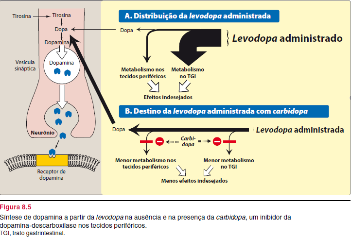
O AAN Practice Guideline 2021 (reafirmado 2025) mantém a levodopa-carbidopa como tratamento de primeira linha para sintomas motores na DP precoce, dado seu ganho motor superior aos agonistas dopaminérgicos e IMAO-B. A principal contrapartida — risco maior de discinesias após anos de uso — não justifica adiar o início em pacientes com prejuízo funcional [10].
Agonistas dopaminérgicos
Estimulam diretamente os receptores D2 estriatais, sem depender da conversão por neurônios remanescentes (vantagem em fases avançadas).
- Não-ergolínicos (mais usados hoje): pramipexol, ropinirol, rotigotina (adesivo transdérmico — útil em flutuações e disfagia).
- Ergolínicos (em desuso por fibrose valvar): bromocriptina, pergolida.
- Apomorfina: agonista potente, uso subcutâneo intermitente como resgate em episódios "off" agudos.
RAM marcantes: náuseas, hipotensão ortostática, sonolência diurna excessiva (com "ataques de sono" — alertar o paciente sobre dirigir), e os distúrbios do controle dos impulsos (jogo patológico, hipersexualidade, compras compulsivas) — pergunta dirigida obrigatória em retornos.
Inibidores da MAO-B
Selegilina e rasagilina inibem irreversível e seletivamente a monoaminoxidase B — a forma que predomina no cérebro humano e que degrada dopamina. Resultado: mais dopamina disponível na fenda sináptica e provavelmente menos formação de radicais livres tóxicos (hipótese neuroprotetora ainda debatida).
Podem ser usados como monoterapia em fase inicial (sintomas leves) ou como adjuvantes da levodopa para suavizar flutuações. Em doses terapêuticas, a seletividade pela MAO-B reduz (mas não elimina) o risco da "crise tiraminérgica" clássica dos IMAO não-seletivos.
Macete de origem — a selegilina nasceu para Parkinson: a professora lembra que, ainda na escola de farmacologia clássica, a selegilina (Jumex®) já era apresentada como o "antidepressivo" da classe IMAO-B — só que quase ninguém a usa de fato como antidepressivo. Como a MAO-B degrada preferencialmente dopamina, inibi-la rende muito mais retorno clínico no parkinsoniano (mais dopamina disponível) do que no deprimido. Logo: se você vir selegilina prescrita, pense Parkinson primeiro, não humor.
Inibidores da COMT
Quando a DOPA-descarboxilase periférica é inibida pela carbidopa, uma via metabólica secundária ganha importância: a catecol-O-metiltransferase (COMT) converte levodopa em 3-O-metildopa, que compete com a levodopa pelo transporte ativo na BHE — reduzindo a fração que chega ao cérebro.
- Entacapona — ação periférica, baixa toxicidade, uso como adjuvante para "wearing-off".
- Tolcapona — ação central e periférica, mais potente, mas hepatotoxicidade idiossincrásica exige monitoramento de transaminases.
Só fazem sentido associados à levodopa — isoladamente não têm efeito antiparkinsoniano.
Amantadina
Originalmente um antiviral (influenza A). Em DP, age por mecanismos múltiplos: aumento da liberação de dopamina dos estoques, inibição da recaptação e — o mais importante hoje — antagonismo NMDA, que a torna útil para tratar discinesia induzida por levodopa. Pode ser usada isoladamente em fase inicial leve ou como adjuvante.
Anticolinérgicos centrais
Trihexifenidil e biperideno bloqueiam receptores muscarínicos no estriado, atenuando a hiperatividade colinérgica relativa. Atuam predominantemente no tremor e rigidez, pouco na bradicinesia. Também são usados para tratar parkinsonismo induzido por antipsicóticos (sintomas extrapiramidais).
Cuidado: evitar em idosos pelo perfil clássico de RAM anticolinérgicas — confusão, alucinações, retenção urinária, constipação, boca seca, taquicardia, piora cognitiva. Em pacientes idosos com risco de demência, os efeitos cognitivos podem ser devastadores.
Cena clínica para fixar — quando o "Parkinson" é, na verdade, antipsicótico: a professora descreve a imagem clássica: você passa pela ala, vê o paciente psiquiátrico fazendo caretas, movimentos repetidos com a boca, mexendo a língua, e o leigo diz "ele tem cara de maluco". Não tem. Aquilo é discinesia tardia por excesso de bloqueio D2 nigroestriatal — efeito adverso do antipsicótico, não da doença mental. A conduta é reduzir a dose do antipsicótico ou trocar por atípico (e às vezes associar prometazina como sedativo H1). Quem aumenta a dose para "controlar a careta" só piora o quadro.
O raciocínio do professor: "Não confunda parkinsonismo medicamentoso com doença de Parkinson. O paciente que toma haloperidol há 3 semanas e desenvolve tremor e rigidez tem sintomas extrapiramidais — a substância negra está íntegra. Tratamento: retirar o antipsicótico (ou trocar por um atípico) e, se necessário, anticolinérgico central. Levodopa não vai resolver, porque o problema é bloqueio do receptor pós-sináptico, não falta de neurotransmissor."
Parte 3 — Doença de Alzheimer
Fisiopatologia
A doença de Alzheimer é a causa mais comum de demência (≈ 60–70% dos casos). Caracteriza-se por:
- Placas senis extracelulares de peptídeo β-amiloide (Aβ), resultantes do processamento anômalo da proteína precursora amiloide (APP).
- Emaranhados neurofibrilares intracelulares da proteína tau hiperfosforilada.
- Degeneração progressiva, iniciando-se nos neurônios colinérgicos do núcleo basal de Meynert, com perda secundária no hipocampo e córtex associativo.
- Resultado funcional: queda da acetilcolina cerebral + excesso de excitação glutamatérgica (excitotoxicidade) → morte neuronal progressiva.
Os fatores de risco principais: idade (prevalência dobra a cada 5 anos após os 65), histórico familiar, polimorfismo da apolipoproteína E (especialmente APOE-ε4), mutações em pré-senilinas 1 e 2 e na APP (formas familiares precoces).
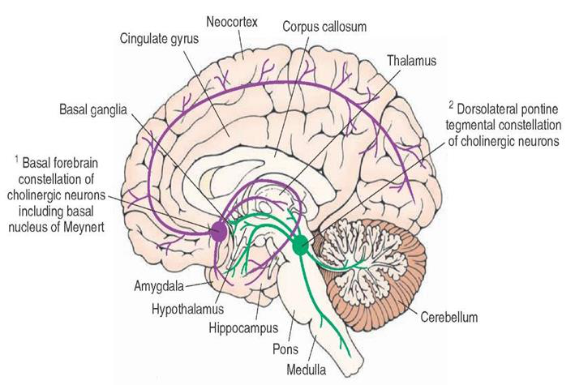
Estágios clínicos
- Leve: comprometimento de memória recente, dificuldade com nomes, leve desorientação espacial; preservação de atividades básicas de vida diária.
- Moderado: prejuízo de funções executivas, alterações comportamentais (apatia, agitação, depressão), dependência crescente para AVDs instrumentais.
- Grave: dependência para AVDs básicas, mutismo, imobilidade — morte geralmente por complicações infecciosas (pneumonia aspirativa).
Objetivo terapêutico: estabilizar o declínio cognitivo, retardar a progressão funcional e tratar sintomas comportamentais — nenhum fármaco aprovado modifica o curso natural da doença (com possível exceção emergente dos anti-amiloides).
História para nunca esquecer o que é perder autonomia: a professora cita o caso de uma colega aposentada que, ao receber o diagnóstico de demência, decidiu filmar a si mesma diariamente. Deixou tudo planejado — instruções escritas, medicamentos prontos — para encerrar a própria vida no momento em que perdesse a independência. Mas a doença foi mais rápida que ela: quando o avanço chegou, já não conseguia mais ler as instruções nem executar o plano. A lição clínica: o declínio cognitivo do Alzheimer rouba justamente a capacidade de decidir sobre si — por isso conversas sobre diretivas antecipadas têm que acontecer no início, com o paciente ainda lúcido, não "depois que piorar".
Inibidores da acetilcolinesterase (AChE-i)
Lógica: como há queda de acetilcolina, inibir a enzima que a degrada na fenda sináptica prolonga o sinal colinérgico residual.
Donepezila (Eranz®)
- Primeiro inibidor da AChE seletivo para o SNC — menos efeitos adversos sistêmicos.
- Longa meia-vida (~ 70 h) → dose única diária, melhor adesão.
- Metabolização hepática (CYP450) — atenção a interações.
- Uso atual mais difundido na fase leve a moderada.
Por que a donepezila virou padrão (e o pioneiro morreu no caminho): a professora lembra que o primeiro inibidor da AChE com seletividade central foi a tacrina — abriu a classe, mas saiu do mercado por hepatotoxicidade grave. A donepezila herdou o nicho exatamente porque tem perfil hepático muito mais limpo, dose única diária e tolerabilidade razoável. Hoje ela é "a droga de escolha" porque combina eficácia equivalente às demais com a menor barreira prática de adesão — e isso, no Alzheimer (paciente idoso, geralmente polimedicado), é decisivo.
Rivastigmina (Exelon®)
- Inibe AChE e butirilcolinesterase (BuChE).
- Alta seletividade pelo SNC; ligação pseudo-irreversível.
- Meia-vida curta (~2 h) mas duração de ação ~12 h.
- Não é metabolizada pelo CYP450 → menos interações medicamentosas — vantagem em idosos polimedicados.
- Disponível em adesivo transdérmico: melhor tolerabilidade gastrointestinal, com eficácia equivalente à via oral.
Adesivo de rivastigmina — por que o professor adora prescrever: a meia-vida da rivastigmina é curta, então a forma oral oscila em picos e vales, e os efeitos colaterais GI (náusea, diarreia) batem justamente nos picos. O adesivo transdérmico resolve dois problemas de uma vez: mantém concentração plasmática estável (como uma infusão contínua de baixo perfil), eliminando os picos que causam o desconforto digestivo, e remove o problema da deglutição num paciente que muitas vezes já tem disfagia. Quando o bolso permite, é a apresentação preferida nesse perfil.
Galantamina (Reminyl®)
- Mecanismo duplo: inibição da AChE + modulação alostérica positiva dos receptores nicotínicos, potencializando a ação da acetilcolina remanescente.
- Meia-vida longa.
Características gerais dos AChE-i
- Indicação: Alzheimer leve a moderado (1ª linha).
- Titulação lenta e gradual (a cada 4 semanas) para tolerância.
- RAM colinérgicas: náuseas, vômitos, diarreia, anorexia, bradicardia, síncope, cãibras, insônia, sonhos vívidos. Cuidado especial em pacientes com bradiarritmia, asma/DPOC, úlcera péptica.
- Benefício clínico modesto — melhora cognitiva pequena, sem reversão da doença.
- Não evitam a progressão; perdem benefício em estágios muito avançados (suspender).
Revisão sistemática Cochrane / NCBI sobre inibidores da colinesterase e memantina: as três moléculas (donepezila, rivastigmina, galantamina) têm eficácia equivalente em desfechos cognitivos e funcionais; a escolha é guiada por perfil de efeitos adversos, interações e via de administração (adesivo de rivastigmina para pacientes com intolerância oral) [12].
Memantina (Ebix®)
Mecanismo: antagonista não-competitivo de baixa afinidade do receptor NMDA do glutamato. Bloqueia o canal apenas quando ele está cronicamente aberto (excitotoxicidade patológica), preservando a transmissão glutamatérgica fisiológica necessária para aprendizado e memória.
Indicação: Alzheimer moderado a grave.
Vantagens: efeitos adversos leves e reversíveis (tontura, cefaleia, confusão); não interage com AChE-i — pelo contrário, a associação donepezila + memantina mostra benefício adicional em estágios avançados.
Ginkgo biloba — a posição honesta do professor: a evidência de eficácia é, no melhor dos cenários, fraca e inconsistente — não dá para chamar de tratamento. Mas tem dois pontos a favor: perfil de segurança benigno e papel cultural de acolhimento. Em paciente com queixa cognitiva leve, que insiste em "fazer alguma coisa", deixar usar Ginkgo costuma fazer mais bem do que mal — desde que isso não substitua AChE-i ou memantina quando indicados, e que se atente a sangramentos em quem usa antiagregantes/anticoagulantes. Como prevenção primária em paciente assintomático: não vale a pena.
O que tratamento de Alzheimer faz (e o que NÃO faz): a professora insiste — "a gente não reverte, só desacelera". AChE-i e memantina não recuperam neurônio morto, não restauram memória perdida e não evitam o desfecho final. O que eles oferecem é tempo: meses a poucos anos a mais de funcionalidade preservada. Por isso o tratamento não-medicamentoso pesa tanto — estimulação cognitiva, exercício físico, dieta, manutenção dos vínculos familiares. Quem promete "cura" para a família está mentindo; o papel honesto é alinhar expectativa, pactuar metas modestas e cuidar do cuidador.
O ensaio clínico publicado no New England Journal of Medicine ("Donepezil and Memantine for Moderate-to-Severe Alzheimer's Disease") demonstrou benefício significativo da combinação donepezila + memantina em desfechos cognitivos e funcionais comparada à donepezila isolada em pacientes com doença moderada a grave [11]. Esse achado consolidou a estratégia de associar as duas classes nas fases avançadas — formulações com dose fixa combinada (5/10, 10/20 mg) estão disponíveis para simplificar a adesão.
Perspectivas futuras: anti-amiloides
A hipótese amiloide postula que o acúmulo de β-amiloide é o evento iniciador da cascata patológica. A partir dela, anticorpos monoclonais dirigidos contra Aβ vêm sendo testados:
- Aducanumabe — primeiro anti-amiloide aprovado pela FDA (2021, aprovação controversa); retirado do mercado em 2024.
- Lecanemabe — aprovado pela FDA em 2023; reduz placas amiloides e mostra modesto retardo no declínio cognitivo em fase precoce; RAM importantes: ARIA (Amyloid-Related Imaging Abnormalities — edema e microhemorragias cerebrais).
- Donanemabe — aprovado em 2024 para Alzheimer precoce.
Ainda são terapias de alto custo, com benefício modesto e perfil de risco que exige seleção cuidadosa do paciente — não substituem AChE-i nem memantina na prática atual brasileira.
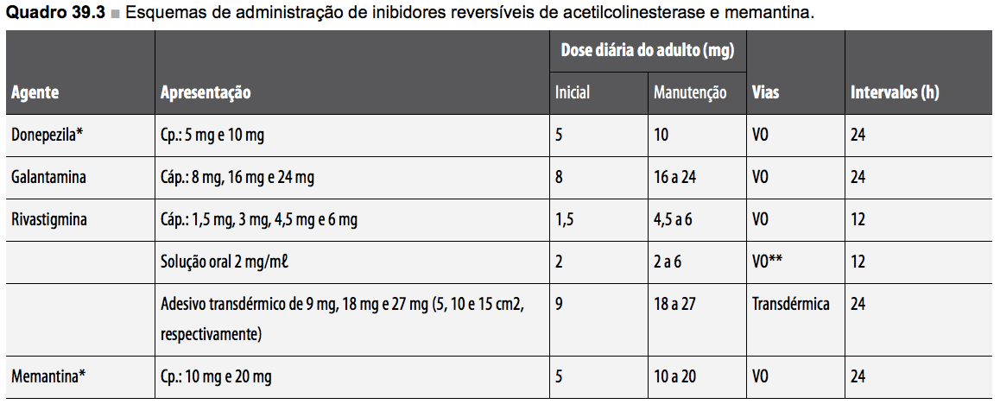
O raciocínio do professor: "Cuidado clássico de prova: memantina e amantadina não são a mesma coisa. A memantina é antagonista NMDA usada no Alzheimer; a amantadina é antagonista NMDA + antiviral usada na DP (e para discinesia). Mesmo mecanismo principal (NMDA), indicações totalmente diferentes — quem confunde isso na questão perde ponto fácil."
Conexões com outras aulas
- Aula 1 (transtornos do humor): valproato, carbamazepina e lamotrigina são também estabilizadores do humor — o mesmo fármaco, papéis distintos a depender do contexto clínico.
- Aula 2 (esquizofrenia): antipsicóticos típicos causam sintomas extrapiramidais (parkinsonismo medicamentoso) por bloqueio D2 estriatal — espelho farmacológico exato do que a DP faz por perda de dopamina. Tratar com anticolinérgico central, não com levodopa.
- Benzodiazepínicos: aparecem aqui (anticonvulsivantes / status) e na aula de sono — mesmo mecanismo GABAérgico, contextos diferentes.
→ Checkpoint da Aula 3
- → Crise é o evento eletrofisiológico; epilepsia é a doença das crises recorrentes não-provocadas — diagnóstico clínico.
- → Quatro mecanismos cobrem 90% dos anticonvulsivantes: bloqueio Na⁺ (fenitoína, carbamazepina, lamotrigina), bloqueio Ca²⁺ tipo T (etossuximida — ausência), potencialização GABA (BZD, fenobarbital, valproato), modulação SV2A (levetiracetam).
- → Pontos críticos de prova: fenitoína (cinética não-linear, hiperplasia gengival), carbamazepina (SJS-HLA-B*1502, hiponatremia), valproato (hepatotoxicidade, teratogenicidade), lamotrigina (titulação lenta).
- → Status epilepticus: BZD IV é 1ª linha; segunda linha = fosfenitoína OU valproato OU levetiracetam IV (equivalentes); refratário = anestesia em UTI.
- → Parkinson = perda dopaminérgica nigroestriatal + α-sinucleína (corpos de Lewy); tétrade: tremor de repouso, rigidez, bradicinesia, instabilidade postural.
- → Levodopa-carbidopa é primeira linha; carbidopa bloqueia DOPA-descarboxilase periférica; complicações tardias = flutuações on-off e discinesia. Adjuvantes: agonistas D2 (impulsividade), IMAO-B, COMT-i, amantadina (NMDA, anti-discinesia), anticolinérgicos (cuidado em idosos).
- → Alzheimer = placas Aβ + emaranhados tau + degeneração colinérgica do núcleo de Meynert. AChE-i (donepezila, rivastigmina, galantamina) na fase leve-moderada; memantina (antagonista NMDA) na moderada-grave; combinação donepezila + memantina em avançado.
- → Não confundir: carbamazepina ↔ oxcarbazepina (auto-indução, hiponatremia); parkinsonismo medicamentoso ↔ DP (bloqueio D2 vs. perda dopaminérgica); memantina ↔ amantadina (ambas NMDA, indicações distintas).
§ 04 Farmacologia Cardiovascular
Da fisiologia do controle da pressão arterial até a angina: esta aula percorre o arsenal terapêutico que governa o sistema cardiovascular. Vamos seguir a ordem do professor: revisão fisiológica → hipertensão → vasoativos → insuficiência cardíaca → coronariopatia.
1 · Fisiologia cardiovascular — a equação que organiza tudo
A pressão arterial é o produto de duas variáveis macroscópicas:
PA = DC × RVPT
Onde DC (débito cardíaco) = volume sistólico × frequência cardíaca, e RVPT é a resistência vascular periférica total. Toda droga anti-hipertensiva, no fim, mexe em pelo menos uma dessas alavancas.
- Leito arterial — reservatório de pressão; é onde a RVPT é gerada principalmente pelas arteríolas.
- Leito venoso — reservatório de volume (75–80% do sangue circulante). É o "tanque" para onde se pode redistribuir volume.
- RVPT — depende dos reflexos cardiovasculares que mantêm a pressão.
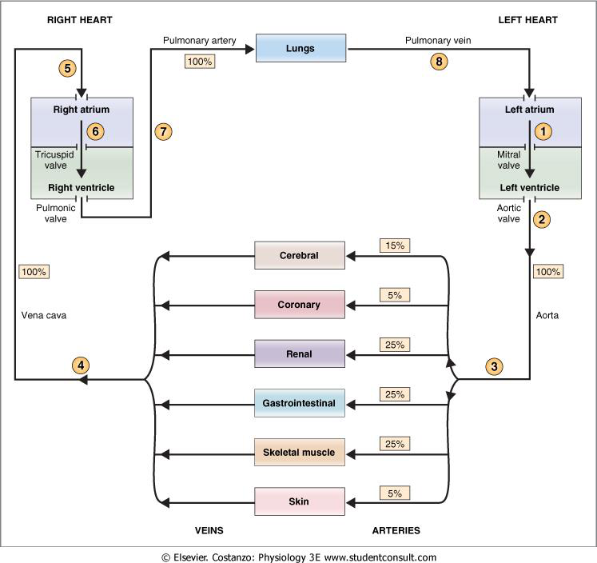
Regulação do volume sanguíneo (longo prazo) envolve três órgãos:
- Rins — SRAA (sistema renina-angiotensina-aldosterona): retém Na⁺ e água.
- Pituitária — ADH (vasopressina): retém água livre.
- Coração — ANP (peptídeo natriurético atrial): natriurese, antagonista fisiológico do SRAA.
Controle autonômico do coração: simpático e parassimpático exercem tônus contínuo, mesmo em repouso.
- Simpático (β1): ↑ FC, ↑ automatismo, ↑ contratilidade. Mecanismo intracelular: ↑ AMPc → ↑ influxo de Ca²⁺ no miócito. Custo: ↑ consumo de O₂ desproporcional ao trabalho realizado (queda da eficiência).
- Parassimpático (M2): ↓ FC, ↓ contração atrial, ↓ condução AV. Mecanismo: ↓ AMPc + abertura de canais de K⁺ → hiperpolarização.
Hierarquia temporal do controle da PA:
- Curto prazo — barorreflexo via SNC simpático (segundos).
- Médio prazo — SRAA, peptídeos natriuréticos, ADH e sede (horas).
- Longo prazo — SRAA (dias a semanas), através do balanço de Na⁺.
Cenário clássico no banco de sangue: o paciente acabou de doar, levanta da maca depressa e, três ou quatro passos depois, vai ao chão. É a síndrome vasovagal — o simpático não ajustou a tempo o tônus vasomotor para vencer a coluna de líquido contra a gravidade. Por isso o protocolo manda sentar, beber o suquinho e só liberar quando estabilizar. Vale para a vida: idoso que toma anti-hipertensivo precisa ser orientado a levantar devagar — o barorreflexo dele é mais lento e a queda pode terminar em fratura de fêmur.
O raciocínio do professor: toda droga anti-hipertensiva ataca o produto PA = DC × RVPT. Diuréticos baixam DC (via volume). β-bloqueadores baixam DC (via FC e contratilidade). IECA, BRA, BCC e α-bloqueadores baixam RVPT. Vasodilatadores diretos baixam RVPT. Se você fixa essa equação, não precisa decorar lista: você deduz.
2 · Hipertensão arterial sistêmica — definição e epidemiologia
HAS é uma condição clínica multifatorial caracterizada por níveis elevados e sustentados de pressão arterial, com alterações morfofuncionais em órgãos-alvo (coração, rim, cérebro, retina, vasos).
A mortalidade cardiovascular aumenta progressivamente com a elevação da PA a partir de 115/75 mmHg, de forma linear, contínua e independente. Em 2010, cerca de 30 milhões de brasileiros eram hipertensos; apenas 10% mantinham PA sob controle; 75% dependiam do SUS.
Fatores de risco: idade, etnia, gênero, ingestão de sal, ingestão de álcool, sedentarismo, tabagismo, excesso de peso e fatores genéticos.
HAS secundária (3–5% dos casos): causas renais (estenose de artéria renal, doença parenquimatosa), endócrinas (Cushing, feocromocitoma, hiperaldosteronismo, hipertireoidismo), medicamentosas (AINEs, corticoides, simpaticomiméticos, anticoncepcionais, cocaína, álcool), apneia obstrutiva do sono, coarctação de aorta.
A diretriz 2025 AHA/ACC[13] e a 2023 ESH[16] recomendam como primeira linha em HAS não-complicada: IECA, BRA, BCC dihidropiridínicos de longa ação OU diurético tiazídico (clortalidona/indapamida preferidos sobre hidroclorotiazida). Betabloqueadores deixaram de ser primeira linha em HAS não-complicada por menor eficácia na prevenção de AVC[13]. Em estágio 2 (≥160/100 mmHg) inicia-se com combinação dupla (IECA/BRA + BCC ou IECA/BRA + tiazídico). Meta de PA: <130/80 mmHg na maioria dos adultos.
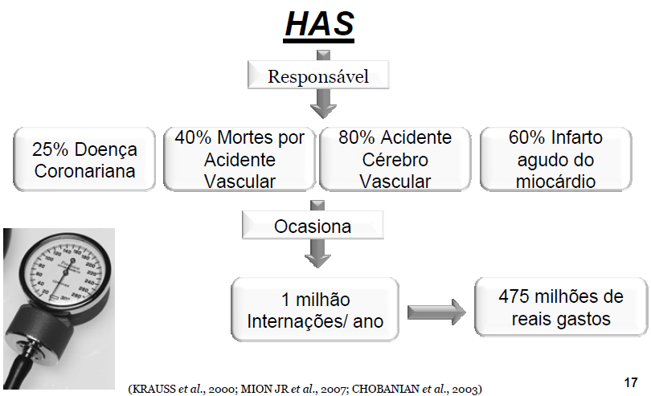
O barorreceptor "reprograma" o set-point ao longo do tempo. Em modelos com L-NAME (inibição da óxido nítrico-sintase), o rato fica hipertenso crônico; quando se tira o estímulo, a pressão não volta — o baro foi recalibrado. No paciente, isso explica por que o hipertenso novo, ao iniciar o tratamento, sente sintomas de hipotensão (apatia, sonolência, tontura) com 12×8 — para ele, o "normal" era 16×10. Avise antes de prescrever, ou ele abandona o anti-hipertensivo achando que está pior.
O professor enfatiza que medidas não-medicamentosas não são acessórias — em muitos casos resolvem sozinhas. Os ganhos somados na sistólica são: perda de 10 kg → até 20 mmHg; dieta DASH (frutas, legumes, baixa gordura saturada) → até 14 mmHg; redução do consumo de sal (o brasileiro consome 12 g/dia, precisa de 3 g) → 8 mmHg; exercício físico → 10 mmHg; moderação do álcool → 4 mmHg. Se o fator que precipitou a hipertensão for modificável (obesidade, sedentarismo, álcool), o paciente pode até "curar" a HAS e suspender medicação. Por isso a receita tem que sair sempre acompanhada dessa tabela.
3 · Diuréticos — primeira parada do nefron
Os diuréticos formam uma das classes-pilares da terapia cardiovascular. A lógica é simples: ao perder sódio, perde-se volume; ao perder volume, cai o DC e cai a PA. Eles também são fundamentais no controle do edema da insuficiência cardíaca.
Tiazídicos — hidroclorotiazida, clortalidona, indapamida.
- Local de ação: túbulo contorcido distal (TCD), bloqueando o cotransportador Na⁺/Cl⁻ (NCC).
- Efeito: natriurese moderada + efeito vasodilatador adicional em uso crônico.
- Efeitos adversos: hipocalemia, hiponatremia, hipomagnesemia, hiperuricemia (compete com excreção tubular do urato), hiperglicemia e dislipidemia (efeitos metabólicos), hipercalcemia leve.
Diuréticos de alça — furosemida, bumetanida, torasemida.
- Local: ramo ascendente espesso da alça de Henle, bloqueando o NKCC2 (cotransportador Na⁺/K⁺/2Cl⁻).
- Efeito: natriurese intensa — são os diuréticos mais potentes; eliminam até 25% do Na⁺ filtrado.
- Indicações: edema da IC descompensada, edema agudo de pulmão, edema renal/hepático refratário, hipercalcemia aguda.
- Efeitos adversos: hipocalemia, hipomagnesemia, hipocalcemia, alcalose metabólica hipoclorêmica, ototoxicidade (relacionada à dose e à infusão rápida — em especial em insuficiência renal), hiperuricemia.
Poupadores de potássio
- Antagonistas mineralocorticoides (espironolactona, eplerenona): bloqueiam o receptor da aldosterona no TCD/coletor → impedem a expressão de ENaC. Espironolactona também antagoniza receptores androgênicos (ginecomastia, irregularidade menstrual); eplerenona é mais seletiva.
- Bloqueadores diretos do ENaC (amilorida, triantereno): bloqueiam o canal epitelial de sódio no túbulo coletor.
- Efeito adverso comum: hipercalemia — risco grave em combinação com IECA/BRA, AINE ou em insuficiência renal.
Inibidores da anidrase carbônica — acetazolamida. Atuam no túbulo contorcido proximal, perdem Na⁺/HCO₃⁻; uso em glaucoma, mal-da-altura, alcalose metabólica.
Diuréticos osmóticos — manitol. Aumentam a osmolaridade tubular, arrastam água. Uso em edema cerebral e oligúria.
4 · Antagonistas dos canais de cálcio (BCC)
O Ca²⁺ é o transdutor da contração — entra na célula pelos canais tipo L (sítio na subunidade α1) e desencadeia tanto a contração do miocárdio quanto da musculatura lisa vascular, além de governar o automatismo do nó sinoatrial e a condução AV.
Classificação por estrutura:
- Não-dihidropiridínicos: verapamil e diltiazem — agem preferencialmente no coração (efeito cronotrópico, inotrópico e dromotrópico negativos). Verapamil é mais cardíaco; diltiazem é intermediário.
- Dihidropiridínicos (DHP): nifedipino, anlodipino, felodipino, nicardipino, lercanidipino — seletividade vascular. Vasodilatam arteríolas; podem causar taquicardia reflexa (mais a nifedipino de ação curta).
Gerações: a 1ª geração (verapamil, diltiazem, nifedipino comum) tem meia-vida curta e maiores variações farmacocinéticas. A 2ª geração inclui formulações de liberação prolongada (verapamil AP, diltiazem SR/CD, nifedipino OROS/GITS) e novos DHP (felodipino, nicardipino). A 3ª geração — anlodipino, lacidipino, lercanidipino — tem início e término lentos, previne ativação simpática reflexa e fenômeno da retirada.
Indicações: HAS (mono ou associação), angina vasoespástica (Prinzmetal), angina estável; verapamil e diltiazem para arritmias supraventriculares; miocardiopatia hipertrófica.
Efeitos adversos dos DHP: rubor facial, cefaleia, tontura, palpitações, edema maleolar (20%) — por vasodilatação arteriolar predominante. Nifedipino de ação curta pode exacerbar angina em coronariopatia grave.
Efeitos adversos do verapamil/diltiazem: bradicardia, bloqueio AV, constipação (mais comum no verapamil). Não combinar verapamil/diltiazem com β-bloqueador IV — risco de bradicardia extrema e BAV.
O professor é categórico sobre o nifedipino sublingual no pronto-socorro: o CFM (Reunião Plenária 2004) o considera má prática. A queda abrupta e imprevisível da PA pode desencadear isquemia coronariana ou cerebral. Em urgência hipertensiva, usa-se captopril SL ou clonidina; em emergência hipertensiva, nitroprussiato IV.
A história de como o Adalate (nifedipino) caiu em desuso sublingual: a cápsula gelatinosa laranja foi feita para abrir lentamente no intestino. Alguém descobriu que, furando-a e pingando três gotas embaixo da língua, o paciente com 180×140 saía do PS em 40 minutos com pressão "normal". Virou rotina. Só que esses pacientes voltavam mortos de IAM ou AVC isquêmico no dia seguinte — a pressão de um hipertenso crônico está alta para perfundir; ao despencar a 90×60 abruptamente, isquemia órgão-alvo. Lição: anti-hipertensivo, não hipotensor — o objetivo é normalizar, não derrubar.
Mnemônico do professor para os "sobrenomes" dos BCC modernos: toda vez que você vê o medicamento com duas ou três letrinhas após o nome (OROS, SR, CD, GITS, retard), pense em perfil farmacocinético melhorado — pico-vale achatado, uma tomada por dia, sem oscilação que ative o barorreflexo. Regra inegociável: esses comprimidos não podem ser macerados, partidos ou diluídos em sonda; se o paciente não engole, troca-se a apresentação, mas nunca se quebra. Quebrar = transformar liberação prolongada em pico tóxico.
5 · Inibidores da ECA (IECA)
A história começa em 1965, quando Sérgio Ferreira descreveu o fator potenciador da bradicinina (BPF) no veneno da Bothrops jararaca. Em 1976, o captopril, ativo por via oral, abriu a era moderna do controle do SRAA.
Mecanismo: a ECA cataliza a conversão de angiotensina I em angiotensina II e também degrada a bradicinina. Inibir a ECA significa:
- ↓ angiotensina II → ↓ vasoconstrição arterial, ↓ aldosterona (↓ retenção de Na⁺), ↓ hipertrofia/hiperplasia vascular e miocárdica.
- ↑ bradicinina → vasodilatação adicional via NO/EDRF e prostaglandinas, mas também tosse e angioedema (efeitos adversos clássicos).
Classificação por radical químico:
- Sulfidrila: captopril.
- Carboxil: enalapril, lisinopril, ramipril, perindopril, trandolapril, benazepril, quinapril, cilazapril.
- Fosfinil: fosinopril.
Indicações: HAS, insuficiência cardíaca (mortalidade!), pós-IAM, nefropatia diabética e proteinúrica, hipertrofia ventricular esquerda, disfunção endotelial — prevenção de eventos coronarianos.
Efeitos adversos:
- Hipotensão de primeira dose (mais em hipovolêmicos com renina elevada).
- Tosse seca (10–30%) — bradicinina.
- Angioedema de face/orofaringe (0,1–0,2%) — risco aumentado em afrodescendentes; contraindica reuso.
- Hipercalemia — atenção em combinação com poupador de K⁺ ou em DRC.
- Queda de filtração glomerular e injúria renal aguda em estenose bilateral de artéria renal (ou unilateral em rim único) — a Ang II é necessária para manter a pressão glomerular pela vasoconstrição da arteríola eferente.
- Teratogenicidade — contraindicado na gestação (2º/3º trimestres: anormalidades ósseas, insuficiência renal neonatal e óbito).
- Erupções cutâneas, prurido.
Por que o IECA dá tosse seca? O pulmão é riquíssimo em ECA — bloqueando-a, sobra bradicinina, e a bradicinina é altamente irritativa nas vias aéreas. O paciente passa meses tossindo, faz raio-x limpinho, recebe antialérgico, não melhora. O médico esqueceu de perguntar a medicação. Troca captopril por losartana e a tosse some — mas leva cerca de 1 mês para sumir, porque até a ECA voltar a degradar o octapeptídeo derivado da bradicinina, leva tempo. Avise o paciente: "vai melhorar, mas não amanhã" — senão ele acha que a troca não funcionou.
6 · Bloqueadores dos receptores AT1 (BRA)
Os BRA — losartana, valsartana, candesartana, telmisartana, irbesartana, olmesartana — bloqueiam seletivamente o receptor AT1 da angiotensina II. As consequências fisiológicas são quase idênticas às do IECA, com uma diferença importante: não interferem na degradação da bradicinina. Por isso, não há tosse e a incidência de angioedema é menor.
Indicações: as mesmas do IECA. Em geral é a alternativa preferida em pacientes que desenvolvem tosse com IECA.
Efeitos adversos: hipercalemia, hipotensão, teratogenicidade (mesma contraindicação na gestação), injúria renal em estenose bilateral.
Inibidor direto da renina — aliskireno (Rasilez/Tekturna), aprovado em 2007, bloqueia a atividade da renina antes da geração de Ang I. Aprovado para terapia associada. Efeitos adversos: diarreia, angioedema. Não combinar com IECA/BRA em diabéticos ou DRC (estudo ALTITUDE — risco renal e hipercalemia).
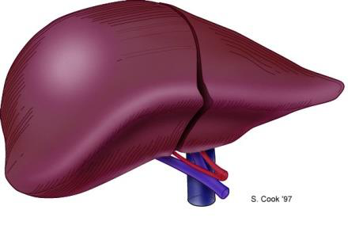
7 · β-bloqueadores
Os β-bloqueadores antagonizam de forma específica, competitiva e reversível a ação das catecolaminas nos receptores β-adrenérgicos. A primeira molécula da classe foi o dicloroisoproterenol (Powell e Slater, 1958).
Classificação clínica:
- Cardiosseletivos (β1): atenolol, metoprolol (tartarato e succinato), bisoprolol, acebutolol, esmolol (uso IV de curta duração). Preferíveis em DPOC/asma e diabetes.
- Não seletivos (β1 + β2): propranolol, nadolol, timolol, pindolol.
- α1 + β (vasodilatadores): carvedilol e labetalol — combinam bloqueio β com bloqueio α1 (vasodilatação periférica adicional).
Mecanismos protetores no coração: ↓ FC, ↓ PA, ↓ contratilidade, ↓ consumo de O₂; ↑ tempo de perfusão diastólica; redução da ruptura de placa aterosclerótica; estabilização de membranas; ↑ limiar de fibrilação.
Indicações:
- HAS — em associação ou em pacientes com indicação adicional (pós-IAM, IC, enxaqueca, tremor essencial).
- Cardiopatia isquêmica — angina estável, instável, pós-IAM (mortalidade!).
- Insuficiência cardíaca — apenas carvedilol, metoprolol succinato e bisoprolol têm evidência de redução de mortalidade.
- Miocardiopatia hipertrófica, prolapso mitral, dissecção de aorta, QT longo.
Efeitos adversos: bradicardia, BAV, broncoespasmo (não seletivos), vasoespasmo periférico, astenia, distúrbios do sono, sintomas GI; síndrome da retirada — não suspender abruptamente (risco de isquemia rebote).
Apesar de eficazes no controle pressórico, β-bloqueadores não são mais considerados primeira linha em HAS não-complicada, pois meta-análises mostraram menor proteção contra AVC quando comparados a outras classes[13]. Sua indicação preferencial em pacientes hipertensos ocorre quando há comorbidades — IC, pós-IAM, arritmia, angina, enxaqueca.
O caso do atleta de fim de semana: cara sedentário, gordinho, fuma, bebe, resolve correr 22 km porque um influencer mandou. Cai morto no meio da prova. Por quê? O simpático aumentou frequência e contratilidade, mas as coronárias não aumentaram fluxo proporcionalmente — IAM agudo. O atleta de verdade tem hipertrofia excêntrica (sarcômeros em série, câmara preservada) e faz bradicardia de repouso (40 bpm) porque cada sístole é uma "superbomba". Já o hipertenso desenvolve hipertrofia concêntrica (sarcômeros em paralelo) — cresce para fora e para dentro, reduzindo o volume de câmara. Uma é fisiológica, a outra é patologia que termina em IC.
Macete para escolher β-bloqueador: o propranolol bloqueia β1 e β2 (potência 1, seletividade 0) — derruba pressão mas piora asma e DPOC; o atenolol é β1-seletivo moderado; o metoprolol succinato (Selozok) é a terceira geração, hoje distribuído pelo SUS, com menos efeitos adversos. Em intoxicação por β-bloqueador, o antídoto é glucagon (efeito inotrópico positivo independente do receptor β) — não use adrenalina, que estimularia também os receptores α.
8 · α1-bloqueadores e simpaticolíticos centrais
α1-bloqueadores — prazosina, doxazosina, terazosina. O antagonismo de α1 periférico inibe a vasoconstrição arterial e venosa induzida pelas catecolaminas; também relaxam o esfíncter vesical (útil em HBP).
Indicações: HAS (segunda linha), HBP (uso preferencial em homens idosos hipertensos com sintomas urinários), ICC (uso limitado), exames urodinâmicos.
Efeitos adversos: "fenômeno da primeira dose" (hipotensão postural 30–90 min após a primeira dose — começar com dose baixa à noite), retenção de sal/água, tontura, cefaleia, sonolência, náusea.
Simpaticolíticos centrais (α2-agonistas) — clonidina e metildopa. Ativam α2 pré-sinápticos no tronco cerebral → ↓ saída simpática → ↓ RVPT sem alterar significativamente o DC.
- Metildopa — fármaco de eleição em hipertensão na gestação. Efeitos adversos: hepatotoxicidade reversível, anemia hemolítica autoimune (Coombs+, <0,5%), sonolência, disfunção sexual.
- Clonidina — útil em terapia associada; teste da clonidina diagnóstica feocromocitoma. Efeito rebote grave com a retirada abrupta (ansiedade, sudorese, taquicardia, crise hipertensiva).
Cuidado com a leitura ingênua das diretrizes: a metildopa não é o "melhor" antihipertensivo da gestante — é o "menos pior". IECA e BRA são teratogênicos; diurético reduz volume amniótico e arrisca sofrimento fetal; BCC interfere na contração da musculatura lisa uterina. Sobrou a metildopa, que age pelo precursor de "falso neurotransmissor": entra na cascata da dopamina → noradrenalina e gera moléculas que ocupam o receptor sem desencadear a resposta simpática plena. Não é potente, mas é seguro para o feto — por isso fica.
9 · Vasodilatadores diretos
Agem diretamente na musculatura vascular, reduzindo RVPT sem mediação do SNC ou hormonal. Como toda vasodilatação dispara o SRAA e a ativação simpática reflexa, esses fármacos não funcionam em monoterapia — requerem associação com β-bloqueador (controle da taquicardia) e diurético (controle da retenção de sal e água).
- Hidralazina — vasodilatação arteriolar; útil em HAS refratária e em emergência hipertensiva na gestante. EA: cefaleia, taquicardia, retenção hidrossalina, síndrome lúpus-like em doses altas e uso prolongado (acetiladores lentos).
- Minoxidil — abre canais de K⁺ ATP-sensíveis → vasodilatação arteriolar potente; uso em HAS refratária grave. EA: hipertricose, derrame pericárdico.
- Nitroprussiato de sódio — doador de NO; vasodilatação arterial e venosa (mais arterial). Uso em emergência hipertensiva e EAP. Fotodegradável. Risco de intoxicação por cianeto/tiocianato (acidose metabólica) — não usar >3–4 dias.
- Nitroglicerina e dinitrato de isossorbida — doadores de NO via GMPc; vasodilatação predominantemente venosa em doses baixas, arterial em doses altas. Uso em isquemia miocárdica, IC e hipertensão. EA: cefaleia, hipotensão, taquifilaxia (tolerância — necessário intervalo livre de nitrato).
10 · Drogas vasoativas em UTI
São drogas de uso em pacientes críticos, com efeito rápido, curto e dose-dependente; idealmente em acesso venoso central.
- Adrenalina (epinefrina) — efeitos α1, α2, β1, β2. Indicações: anafilaxia, PCR, broncoespasmo grave, hipotensão refratária. Dose baixa (1–2 µg/min): predomínio β2 (broncodilatação, vasodilatação muscular). Dose alta (>10 µg/min): predomínio α (vasoconstrição). EA: taquiarritmias, hiperglicemia, hipocalemia, isquemia periférica.
- Noradrenalina — α1, α2, β1. Primeira escolha no choque séptico. Eleva PA por vasoconstrição com mínima taquicardia (estimulação α1 + reflexo barorreceptor). EA: isquemia periférica e visceral.
- Dopamina — efeito dose-dependente: dopaminérgico (baixa dose), β1 (média), α1 (alta). Atualmente menos usada que noradrenalina em choque por mais arritmias.
- Dobutamina — β1 e β2; inotrópico positivo com leve vasodilatação. Uso em baixo débito e choque cardiogênico. EA: taquiarritmias, hipotensão (β2).
Anedota didática do cantor Vando (e, segundo o professor, também do caso Faustão): IAM de grande extensão, parte do miocárdio fibrosou e a função contrátil ficou no limite — sem dobutamina contínua, a pressão cai e o paciente morre; com dobutamina, sobrevive na UTI à espera de transplante. A dobutamina é β1-agonista seletiva, então estimula força e débito sem o componente α (que aumentaria a pós-carga). É a "ponte" enquanto se decide revascularização ou transplante — mas não é solução definitiva: a meia-vida é curta, exige bomba e acesso central.
11 · Insuficiência cardíaca — fisiopatologia e "4 pilares"
A IC é uma síndrome em que o coração não consegue manter débito adequado às demandas teciduais. Em HFrEF (FEVE <40%) há predomínio de disfunção sistólica; em HFpEF (FEVE preservada), de disfunção diastólica. Em ambas, a ativação neuro-hormonal (SRAA e simpático) gera remodelamento ventricular — hipertrofia, fibrose, dilatação — que perpetua o ciclo.
A terapia moderna de HFrEF visa bloquear simultaneamente as vias mal-adaptativas — daí o conceito dos "4 pilares" GDMT (terapia médica orientada por diretriz).
Conforme a 2022 AHA/ACC/HFSA[14] e o 2024 ACC Expert Consensus Pathway for HFrEF[15], os 4 pilares devem ser iniciados precocemente e titulados até as doses-alvo em até 3 meses:
- ARNI (sacubitril/valsartana) ou IECA/BRA — ARNI é preferido quando tolerado (PARADIGM-HF mostrou superioridade sobre enalapril).
- β-bloqueador específico — apenas carvedilol, metoprolol succinato (CR/XL) ou bisoprolol têm evidência de redução de mortalidade. Metoprolol tartarato não é usado em IC.
- Antagonista mineralocorticoide — espironolactona ou eplerenona.
- iSGLT2 — dapagliflozina ou empagliflozina (DAPA-HF, EMPEROR-Reduced); benefício mesmo em não-diabéticos.
Adjuvantes: diurético de alça para sintomas congestivos, ivabradina (bloqueio do canal If do nó SA — reduz FC sem efeito inotrópico negativo, indicada se FC >70 bpm em ritmo sinusal apesar de β-bloq otimizado), hidralazina + dinitrato de isossorbida (em afrodescendentes ou intolerantes a IECA/BRA), vericiguat (estimulador da guanilato ciclase solúvel)[14][15].
Pista clínica que o professor faz questão de fixar: o primeiro sintoma da IC descompensada não é a dispneia franca — é a tosse. O sangue congestiona na pequena circulação, extravasa nos capilares pulmonares e o pulmão "joga" o líquido para o espaço pleural (se cair no alvéolo, o paciente afoga). Inicialmente, o paciente só tosse; depois entra a respiração "de cachorrinho" (taquipneica e superficial), tentando compensar a queda da expansibilidade. Tosse persistente em hipertenso ou cardiopata = pensar em IC antes de antibiótico. Já viu caso de paciente com 1,5 L de derrame pleural — é uma garrafa PET dentro do tórax.
12 · Doença arterial coronariana / angina
A angina é o sinal de desequilíbrio entre oferta e demanda de O₂ miocárdico. A farmacoterapia ataca os dois lados da equação:
- Nitratos (nitroglicerina, dinitrato de isossorbida, mononitrato): liberam NO → ↑ GMPc → relaxamento da musculatura lisa. Predomínio venoso em doses baixas (↓ pré-carga); arteriolar em altas (↓ pós-carga). Necessário intervalo livre de nitrato (8–12h) para evitar taquifilaxia.
- β-bloqueadores: ↓ FC, ↓ contratilidade, ↓ consumo de O₂. Primeira linha em angina estável.
- BCC: DHP reduzem pós-carga; verapamil/diltiazem reduzem FC e contratilidade. Indicação especial em angina vasoespástica (Prinzmetal).
- Ranolazina: inibe a corrente tardia de Na⁺ → ↓ sobrecarga de Ca²⁺ → ↓ rigidez diastólica e ↓ consumo de O₂. Adjuvante em angina refratária.
Diferença prática angina estável × instável: a estável aparece a grandes esforços (subir escada, correr); a instável surge a mínimos esforços ou em repouso — é uma síndrome coronariana aguda. Implicação terapêutica: BCC dihidropiridínico isolado só pode ser usado na estável. Na instável, se você dilatar sem cobertura, a pressão cai, o barorreflexo dispara taquicardia e o consumo de O₂ aumenta — você piora a isquemia. Por isso, na instável, sempre associe β-bloqueador antes do BCC-DHP, para travar a resposta cronotrópica reflexa.
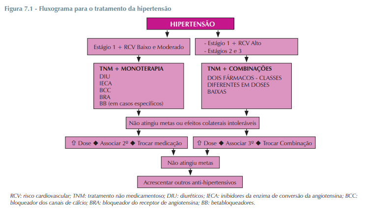
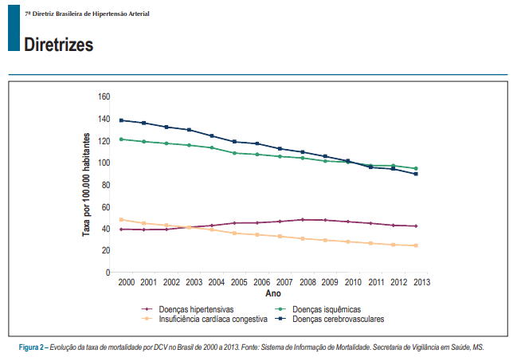
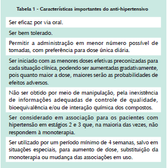
Checkpoint — § 04
- → PA = DC × RVPT — toda droga anti-hipertensiva ataca esse produto. SRAA, simpático e parassimpático são os reguladores integrados.
- → Primeira linha em HAS não-complicada (AHA/ACC 2025, ESH 2023): IECA, BRA, BCC-DHP de longa ação ou tiazídico. β-bloqueador NÃO é primeira linha sem comorbidade[13].
- → Diuréticos: tiazídicos (NCC, TCD), de alça (NKCC2, alça de Henle — mais potentes, ototóxicos), poupadores (antagonistas de aldosterona ou bloqueio de ENaC — risco de hipercalemia).
- → IECA → tosse e angioedema (bradicinina); BRA → sem tosse; ambos causam hipercalemia, são teratogênicos e contraindicados em estenose renal bilateral.
- → BCC não-DHP (verapamil/diltiazem) atuam no coração (FC, AV); BCC-DHP (anlodipino, nifedipino) atuam nos vasos (edema maleolar).
- → β-bloq úteis em IC: apenas carvedilol, metoprolol succinato e bisoprolol reduzem mortalidade. Metoprolol tartarato NÃO serve em IC.
- → "4 pilares" da HFrEF: ARNI (ou IECA/BRA) + β-bloq + antagonista mineralocorticoide + iSGLT2[14][15].
- → Emergência hipertensiva: nitroprussiato IV. Urgência hipertensiva: captopril SL. Nifedipino sublingual é má prática (CFM 2004).
§ 01 — Transtornos de Humor
Classes de antidepressivos — perfil de prova
| Classe / Agente | Mecanismo | Efeitos adversos-chave | Indicação preferencial |
|---|---|---|---|
| ISRS (fluoxetina, sertralina, escitalopram, paroxetina) | Inibição do SERT | Náusea, insônia, disfunção sexual, SIADH em idoso, sangramento | 1ª linha em depressão. Sertralina = cardiopata; escitalopram = mais limpo; fluoxetina = sem descontinuação |
| IRSN (venlafaxina, duloxetina) | Inibição SERT + NET | Náusea, sudorese, HAS dose-dependente (venlafaxina), descontinuação intensa | Depressão com fadiga; duloxetina em dor neuropática e fibromialgia |
| Tricíclicos (amitriptilina, nortriptilina, clomipramina, imipramina) | Inibição SERT/NET + bloqueio M1, H1, α1, canais Na⁺ cardíacos | Sedação, boca seca, constipação, hipotensão postural, CARDIOTOXICIDADE em overdose | Refratários. Clomipramina = TOC. Amitriptilina = dor crônica, profilaxia de enxaqueca |
| IMAO (tranilcipromina, fenelzina, moclobemida) | Inibição MAO-A (irreversível ou reversível) | Hipotensão postural, insônia, REAÇÃO DO QUEIJO com tiramina | Depressão refratária. Moclobemida (RIMA) mais segura |
| Bupropiona | Inibição NET + DAT | Insônia, ↓ limiar convulsivo. Contraindicada em bulimia/anorexia | Depressão + tabagismo. Sem disfunção sexual, sem ganho de peso |
| Mirtazapina | Antagonista α2, 5-HT2, 5-HT3, H1 | Sedação, ↑ apetite, ganho de peso, rara neutropenia | Idoso com depressão + insônia + emagrecimento. Sem disfunção sexual |
| Trazodona | Bloqueio fraco SERT + 5-HT2A + α1 | Sedação, hipotensão postural, PRIAPISMO | Hoje: hipnótico em dose baixa |
| Vortioxetina | Multimodal serotoninérgico | Náusea, menos disfunção sexual | Depressão com prejuízo cognitivo |
| Agomelatina | Agonista MT1/MT2 + antagonista 5-HT2C | Hepatotoxicidade — monitorar TGO/TGP | Depressão com distúrbio do sono |
Estabilizadores de humor — comparativo
| Fármaco | Indicação preferencial | Adversos críticos | Monitorar |
|---|---|---|---|
| Lítio | Mania, manutenção, depressão bipolar, antissuicida | Tremor, DI nefrogênico, hipotireoidismo, teratogenicidade (Ebstein) | Litemia 0,6-1,2 mEq/L; creatinina; TSH; Ca²⁺ |
| Valproato | Mania, ciclagem rápida | Hepatotoxicidade, pancreatite, trombocitopenia, TERATOGÊNICO (tubo neural) | Nível 50-125 µg/mL; TGO/TGP; hemograma; β-hCG |
| Carbamazepina | Mania, ciclagem rápida | Hiponatremia (SIADH), Stevens-Johnson (HLA-B*1502), indução CYP3A4 | Hemograma; Na⁺; nível sérico; interações |
| Lamotrigina | Depressão bipolar; profilaxia de depressão | STEVENS-JOHNSON em titulação rápida; meia-vida ↑ com valproato (metade da dose) | Titulação lenta; reduzir 50% se em uso com valproato |
⚠ Não confundir — Síndrome serotoninérgica × Neuroléptica maligna
| Serotoninérgica | Neuroléptica maligna (NMS) | |
|---|---|---|
| Gatilho | ISRS, IMAO, tramadol, linezolida, triptanos | Antipsicóticos D2 (haloperidol, olanzapina) |
| Instalação | Horas (rápida) | Dias a semanas (lenta) |
| Tônus muscular | Clônus, hiperreflexia, mioclonias (inferior > superior) | Rigidez "em cano de chumbo", hiporreflexia |
| Pupila | Midríase | Normal |
| Ruídos GI | Hiperativos | Normais ou diminuídos |
| CK | Pouco elevada | Muito elevada (rabdomiólise) |
| Tratamento | Suspender; ciproheptadina; suporte | Suspender; dantroleno/bromocriptina; suporte |
⚠ Não confundir — Faixas de intoxicação por LÍTIO
- Terapêutica: 0,6-1,2 mEq/L → tremor fino, polidipsia leve.
- Leve (1,5-2,0): tremor grosseiro, náusea, vômito, diarreia, letargia.
- Moderada (2,0-2,5): confusão, disartria, ataxia, hiperreflexia, fasciculações.
- Grave (>2,5): convulsões, coma, arritmias, IRA → HEMODIÁLISE. Carvão ativado NÃO funciona.
- Precipitantes: desidratação, dieta hipossódica, AINEs, tiazídicos, IECA/BRA, febre.
⚠ Não confundir — Reação do queijo (IMAO) × Crise serotoninérgica
Queijo (IMAO + tiramina): crise hipertensiva pura, cefaleia occipital, palpitações, vasoconstrição maciça por liberação de NA. Sem clônus, sem hiperreflexia.
Serotoninérgica: autonômica + mental + neuromuscular (clônus, hiperreflexia). Diferente fisiopatologia, manejo diferente.
Conduta — Depressão refratária após 2-4 sem em dose adequada
Conduta — Suspeita de transtorno bipolar com fase depressiva
Valores de referência e prazos de prova
- Litemia terapêutica: 0,6-1,2 mEq/L. Intoxicação ≥1,5; grave >2,5.
- Valproato sérico: 50-125 µg/mL.
- Latência antidepressiva: 2-4 semanas (resposta plena 6-8).
- Wash-out IMAO ↔ ISRS: 14 dias (5 semanas se fluoxetina antes, pela meia-vida longa).
- Manutenção de AD após remissão: 6-12 meses no primeiro episódio; ≥2 anos se recorrente.
§ 02 — Sono e Antipsicóticos
Tabela 1 — Hipnóticos: BZD vs Z-drugs vs Melatoninérgicos vs Antagonistas de Orexina
| Classe | Mecanismo | Duração / Agentes | EA principais | Quando preferir |
|---|---|---|---|---|
| Benzodiazepínicos | Modulação alostérica positiva GABA-A (α + γ); aumenta FREQUÊNCIA de abertura do Cl⁻ | Curta: midazolam, triazolam · Intermediária: lorazepam, estazolam · Longa: diazepam, clonazepam, flurazepam | Sedação residual, amnésia anterógrada, tolerância, dependência, abstinência (convulsão), depressão respiratória, quedas em idosos | Insônia inicial com ansiedade; uso de curto prazo · Antídoto: flumazenil |
| Z-drugs | Agonistas SELETIVOS α1 do GABA-A (mesmo sítio do BZD) | Zolpidem, zopiclona, eszopiclona (manutenção) · Zaleplom (ultracurta, ~1h) | Sonambulismo complexo, gosto metálico (zopiclona), tolerância leve, dependência possível | 1ª escolha em idosos e em risco de abuso · Zaleplom: ideal para idoso (mínima ressaca) |
| Melatoninérgicos | Agonistas MT1/MT2 no NSQ — sem ação GABAérgica | Melatonina, ramelteon, agomelatina (5-HT2C também), tasimelteon | Sonolência matinal, transaminases ↑ (agomelatina); eficácia modesta | Insônia em idosos, jet lag, transtorno do trabalho em turnos, ciclo não-24h (cegos) · SEM dependência |
| Antagonistas de Orexina (DORA) | Antagonistas OX1/OX2 no hipotálamo lateral — retiram sinal de vigília | Suvorexanto (Brasil), lemborexanto | Sonolência matinal, sonhos vívidos, cataplexia (raro) | Insônia crônica, paciente que prefere evitar dependência · Preserva arquitetura do sono |
| Anti-H1 / trazodona | Bloqueio H1 no NTM (anti-H1); trazodona = bloq. 5-HT2A + H1 | Doxilamina, difenidramina, hidroxizina, prometazina; trazodona 25–100 mg | Anticolinérgicos (boca seca, constipação, confusão em idosos — Beers); priapismo (trazodona, raro) | Insônia em depressivo (trazodona); insônia ocasional · Evitar uso crônico em idosos |
Tabela 2 — Antipsicóticos: 1ª vs 2ª vs 3ª geração
| Geração | Alvos receptoriais | Agentes | Perfil de EA | Indicação preferencial |
|---|---|---|---|---|
| 1ª (típicos / convencionais) | Antagonista D2 puro; alta potência (incisivos) ou bloqueio adicional M1/α1/H1 (sedativos) | Incisivos: haloperidol, flufenazina, pimozida, pipotiazina · Sedativos: clorpromazina, levomepromazina, tioridazina, sulpirida | SEP ++ (distonia, acatisia, parkinsonismo, discinesia tardia), hiperprolactinemia ++, SNM, prolongamento QT (tioridazina, pimozida); sedativos: anticolinérgicos, hipotensão, ganho de peso | Crise aguda (haloperidol IM ± prometazina); refratariedade financeira; manutenção com depot (haloperidol decanoato) |
| 2ª (atípicos) | Antagonismo D2 + 5-HT2A (5-HT2A > D2); bloqueios secundários em α1, H1, M1 | Clozapina, olanzapina, risperidona, paliperidona, quetiapina, ziprasidona, amisulprida | Síndrome metabólica (olanzapina, clozapina > outros), menos SEP, hiperprolactinemia (risperidona), agranulocitose (clozapina), QT (ziprasidona, quetiapina) | 1ª linha em esquizofrenia (atual diretriz); clozapina em refratariedade (após 2 falhas) |
| 3ª (estabilizadores) | Agonistas parciais D2 + parciais 5-HT1A + antagonistas 5-HT2A | Aripiprazol, brexpiprazol, cariprazina | Acatisia (principal), insônia, náusea; pouco SEP, pouca prolactina, perfil metabólico favorável | Primeiro episódio em jovens; coexistência com obesidade/diabetes; transtorno bipolar (adjuvante) |
Não confundir
SEP = sintomas motores isolados (distonia, acatisia, parkinsonismo, discinesia tardia) sem febre nem disautonomia. SNM = TÉTRADE: hipertermia + rigidez generalizada + disautonomia + alteração de consciência, com CK muito elevada e leucocitose. SEP trata com anticolinérgico/propranolol/redução de dose; SNM exige SUSPENSÃO + dantrolene + bromocriptina + UTI.
Acatisia tem componente MOTOR objetivo: o paciente NÃO consegue ficar parado (anda em círculos, balança a perna, troca de posição), surge 5–60 dias após início do antipsicótico, melhora com propranolol/redução de dose. Ansiedade é predominantemente subjetiva, sem inquietação motora marcante, e melhora com BZD. Confundi-las pode levar a AUMENTAR a dose do antipsicótico — piorando a acatisia.
Distonia aguda = espasmo SUSTENTADO (pescoço torcido, crise oculogírica, protrusão de língua) com paciente CONSCIENTE, dentro de 1–5 dias do início do antipsicótico — reverte com anticolinérgico IM (biperideno, prometazina) ou difenidramina. Crise convulsiva = movimentos CLÔNICOS, alteração da consciência, fase pós-ictal, sem relação temporal específica com o fármaco.
Parkinsonismo = HIPOcinético (rigidez, fácies em máscara, marcha arrastada), precoce (5–30 dias), melhora com anticolinérgico. Discinesia tardia = HIPERcinético (movimentos coreoatetósicos involuntários de face/língua/tronco), aparece após MESES-ANOS, e ANTICOLINÉRGICO PIORA (porque o mecanismo é supersensibilização D2).
Valores de referência citados pelo professor
- Clozapina — leucograma: SEMANAL nas primeiras 18 semanas → depois quinzenal até 1 ano → mensal após. Suspender se neutrófilos < 1.500/mm³ (ou < 1.000/mm³ em algumas referências). Agranulocitose em 1–2% dos pacientes.
- Esquizofrenia — prevalência: ~1% da população mundial; início na 2ª década; concordância em monozigóticos 44%; risco em parentes de 1º grau 10%.
- Discinesia tardia: prevalência 15–35%; incidência anual 3–5% com típicos.
- SNM: mortalidade até 10%.
- Parkinsonismo medicamentoso: ~15% dos pacientes em uso de típicos.
- Insônia no Brasil: 21% da população; 76% têm alguma queixa de sono; mais em mulheres (24%) que em homens (18%).
- Ciclo do sono: 4–6 ciclos por noite, ~1,5 h cada.
Condutas (flow)
§ 03 — Anticonvulsivantes / Parkinson / Alzheimer
Para quem já estudou: os mecanismos, os tradeoffs, e o que o professor marcou em vermelho.
1. Anticonvulsivantes — mapa rápido
| Fármaco | Mecanismo dominante | Indicação principal | EA crítico |
|---|---|---|---|
| Fenitoína | Bloqueio canais Na⁺ | Focais / tônico-clônica / status | Cinética ordem zero · hiperplasia gengival · ataxia · indutor |
| Carbamazepina | Bloqueio canais Na⁺ | Focais · neuralgia trigêmeo · bipolar | SJS (HLA-B*1502) · hiponatremia · auto-indução · leucopenia |
| Oxcarbazepina | Bloqueio canais Na⁺ (cetonado) | Focais (1ª linha alt.) | Hiponatremia (mais que carbamazepina) · sem auto-indução |
| Lamotrigina | Bloqueio Na⁺ + ↓ glutamato | Focais e generalizadas · bipolar depressivo | Rash · SJS se titulação rápida (dobrar lentidão com valproato) |
| Levetiracetam | Ligação SV2A | Focais e generalizadas · status (IV) | Irritabilidade · alterações comportamentais · raiva/depressão |
| Valproato | ↑ GABA + bloqueio Na⁺ + Ca²⁺ T | Generalizadas (todas) · focais · enxaqueca · bipolar | Hepatotoxicidade · pancreatite · trombocitopenia · teratogênico |
| Fenobarbital | ↑ duração canal Cl⁻ (GABA-A) | Neonato · refratário · status | Sedação · déficit cognitivo · indutor potente |
| Etossuximida | Bloqueio Ca²⁺ tipo T (tálamo) | Crises de ausência | Náusea · sonolência · NÃO cobre tônico-clônica |
| Gabapentina / Pregabalina | Subunidade α2δ do canal Ca²⁺ | Dor neuropática · adjuvante focal · ansiedade | Tontura · ganho de peso · edema · sonolência |
| Topiramato | Múltiplo (Na⁺, GABA-A, anidrase carb.) | Focais/generalizadas · enxaqueca profilaxia | Litíase · parestesia · glaucoma agudo · perda peso · "dopa-mato" |
| Vigabatrina | Inibidor irreversível GABA-T | Espasmos infantis (West) · refratário | Defeito permanente campo visual |
| Benzodiazepínicos | ↑ frequência canal Cl⁻ (GABA-A) | Status (1ª linha) · convulsão aguda | Sedação · depressão respiratória · tolerância |
2. Status epilepticus — fluxo de conduta
3. Doença de Parkinson — escolha terapêutica
| Classe | Mecanismo | Vantagem | Desvantagem / EA |
|---|---|---|---|
| Levodopa + carbidopa | Precursor da dopamina; carbidopa inibe DOPA-descarboxilase periférica | Maior eficácia motora · 1ª linha (AAN) | Flutuações on-off · discinesias após 3–5 anos · náuseas · psicose |
| Agonistas dopaminérgicos (pramipexol, ropinirol, rotigotina) | Agonistas diretos D2/D3 (não-ergolínicos) | Útil em jovens · menos discinesia inicial · rotigotina adesivo | Impulsividade (jogo, sexo, compras) · sonolência diurna · hipotensão |
| IMAO-B (selegilina, rasagilina) | Inibição irreversível MAO-B (degrada dopamina) | Monoterapia em fase inicial · adjuvante (suaviza flutuações) | Insônia · náusea · interação serotoninérgica (cuidado com ISRS) |
| COMT-i (entacapona, tolcapona) | Inibição COMT periférica → ↓ 3-O-metildopa | Prolonga cada dose de levodopa · útil em wearing-off | Só com levodopa · tolcapona: hepatotoxicidade · diarreia |
| Amantadina | Antagonista NMDA + ↑ liberação DA | Discinesia induzida por levodopa | Livedo reticular · edema · confusão em idosos |
| Anticolinérgicos (trihexifenidil, biperideno) | Bloqueio muscarínico central | Tremor · SEP medicamentoso · jovens | EVITAR EM IDOSOS · confusão · alucinação · retenção urinária |
| Apomorfina | Agonista D potente (SC intermitente) | Resgate em episódios "off" agudos | Náusea intensa · pré-tratar com domperidona |
4. Doença de Alzheimer — arsenal farmacológico
| Fármaco | Mecanismo | Particularidade | Estágio |
|---|---|---|---|
| Donepezila (Eranz®) | Inibidor seletivo AChE central | Meia-vida ~70 h · dose única diária · metabolizada CYP450 | Leve a moderado |
| Rivastigmina (Exelon®) | Inibidor AChE + BuChE (pseudo-irreversível) | Sem CYP450 · disponível em adesivo transdérmico · menos interações | Leve a moderado |
| Galantamina (Reminyl®) | Inibidor AChE + modulação alostérica nicotínica | Meia-vida longa · ação dupla colinérgica | Leve a moderado |
| Memantina (Ebix®) | Antagonista NMDA não-competitivo baixa afinidade | Efeitos adversos leves e reversíveis · titulação semanal | Moderado a grave |
| Donepezila + memantina | Combinação fixa (5/10, 10/20 mg) | Benefício adicional NEJM em estágios avançados | Moderado a grave |
| Lecanemabe / donanemabe | Anticorpos anti-β-amiloide | Modificador de doença · risco de ARIA (edema/microhemorragia) | Precoce (alto custo) |
5. ⚠ Não confundir
Mesmo mecanismo (bloqueio Na⁺), diferenças críticas: carbamazepina faz auto-indução do CYP3A4 (a meia-vida cai nas primeiras semanas) e tem mais interações. Oxcarbazepina não faz auto-indução, tem menos interações — mas causa mais hiponatremia. SJS associado a HLA-B*1502: risco maior com carbamazepina.
SEP medicamentoso = bloqueio do receptor D2 estriatal (substância negra íntegra) — surge em dias a semanas após início/aumento do antipsicótico. Tratamento: retirar/trocar fármaco + anticolinérgico central (biperideno). DP idiopática = perda dos neurônios da substância negra — progressiva, anos. Levodopa não trata SEP medicamentoso, porque o problema não é falta de neurotransmissor, é bloqueio do receptor pós-sináptico.
Ambas têm antagonismo NMDA como mecanismo. MEMANTINA = antagonista NMDA não-competitivo de baixa afinidade, usada no Alzheimer moderado-grave. AMANTADINA = antagonista NMDA + ↑ liberação dopamina + antiviral influenza A; usada na Doença de Parkinson (especialmente para discinesia induzida por levodopa). Mesmo mecanismo principal — indicações totalmente diferentes. Pergunta clássica de prova.
Crise de ausência = etossuximida (canal Ca²⁺ tipo T talâmico) ou valproato. Fenitoína e carbamazepina podem piorar crises de ausência — não usar.
Indutores (reduzem outros fármacos): fenitoína, carbamazepina, fenobarbital, topiramato — atenção a anticoncepcionais hormonais. Inibidor: valproato — aumenta níveis de lamotrigina (dobrar lentidão da titulação).
6. Primeiras linhas — síntese
| Quadro | 1ª linha | Alternativas |
|---|---|---|
| Crise focal | Lamotrigina · levetiracetam | Oxcarbazepina · carbamazepina |
| Tônico-clônica generalizada (homens) | Valproato | Lamotrigina · levetiracetam |
| Tônico-clônica generalizada (mulher fértil) | Lamotrigina ou levetiracetam | EVITAR valproato |
| Ausência | Etossuximida | Valproato · lamotrigina |
| Mioclônica | Valproato | Levetiracetam · lamotrigina |
| Status epilepticus | BZD IV (lorazepam/diazepam) | Fosfenitoína · valproato · levetiracetam IV |
| Parkinson (sintomas motores) | Levodopa + carbidopa | Pramipexol/ropinirol · rasagilina · amantadina (discinesia) |
| Alzheimer leve-moderado | Donepezila · rivastigmina · galantamina | (equivalentes — escolha por perfil) |
| Alzheimer moderado-grave | Memantina + AChE-i | Combinação fixa donepezila/memantina |
§ 04 — Farmacologia Cardiovascular
Tabela 1 — Diuréticos
| Classe | Local / transportador | EA-chave | Indicação |
|---|---|---|---|
| Tiazídicos HCTZ, clortalidona, indapamida | TCD — bloqueia NCC | HipoK, hipoNa, hiperuricemia, hiperglicemia | HAS (1ª linha) |
| De alça Furosemida, bumetanida, torasemida | Alça de Henle — bloqueia NKCC2 | HipoK, hipoMg, alcalose, ototoxicidade | IC descompensada, EAP, edema |
| Poupador K (antimineralocorticoide) Espironolactona, eplerenona | Coletor — antagonista receptor mineralocorticoide | HiperK, ginecomastia (espiro) | IC (pilar GDMT), cirrose, hiperaldosteronismo |
| Poupador K (ENaC) Amilorida, triantereno | Coletor — bloqueia ENaC | HiperK | Associação a tiazídico |
| IAC Acetazolamida | TCP — anidrase carbônica | Acidose metabólica | Glaucoma, mal-da-altura |
| Osmótico Manitol | TCP — osmolaridade tubular | Expansão volêmica inicial | Edema cerebral, oligúria |
Tabela 2 — HAS: primeira linha (AHA/ACC 2025; ESH 2023)[13][16]
| Classe | Exemplos | Status como 1ª linha em HAS não-complicada |
|---|---|---|
| IECA | Enalapril, ramipril, lisinopril | Sim — especialmente em DM, DRC proteinúrica, IC, pós-IAM |
| BRA | Losartana, valsartana, telmisartana | Sim — alternativa ao IECA (sem tosse) |
| BCC-DHP | Anlodipino, nifedipino LP, felodipino | Sim — especialmente em afrodescendentes e idosos |
| Tiazídico | Clortalidona, indapamida > HCTZ | Sim |
| β-bloqueador | Carvedilol, metoprolol, bisoprolol | NÃO é 1ª linha em HAS NÃO-complicada[13]. Indicar se: pós-IAM, IC, arritmia, angina, enxaqueca. |
Estágio 2 (≥160/100 mmHg): já iniciar com COMBINAÇÃO dupla — IECA/BRA + BCC ou IECA/BRA + tiazídico.
Tabela 3 — HFrEF: 4 pilares GDMT[14][15]
| Pilar | Fármaco preferido | Observação clínica |
|---|---|---|
| 1. ARNI (ou IECA/BRA) | Sacubitril/valsartana | ARNI > IECA (PARADIGM-HF). Washout de 36h ao trocar IECA → ARNI. |
| 2. β-bloqueador específico | Carvedilol, metoprolol succinato, bisoprolol | Apenas esses 3 reduzem mortalidade em IC. Metoprolol tartarato NÃO serve. |
| 3. Antagonista mineralocorticoide | Espironolactona, eplerenona | Monitorar K⁺ e creatinina. |
| 4. iSGLT2 | Dapagliflozina, empagliflozina | Benefício mesmo em não-diabéticos. |
Adjuvantes: diurético de alça (sintomas congestivos), ivabradina (FC>70 bpm em RS, bloqueio do canal If), hidralazina + dinitrato (afrodescendentes), vericiguat.
Não confundir
⚠ IECA × BRA: IECA causa tosse e angioedema (acúmulo de bradicinina); BRA não causa tosse (não mexe na bradicinina). Ambos: hipercalemia, teratogênicos, contraindicados em estenose renal bilateral.
⚠ Verapamil/diltiazem × anlodipino/nifedipino: não-DHP atuam no coração (↓ FC, ↓ AV — usar em FA, TSV); DHP atuam nos vasos (vasodilatação arteriolar — usar em HAS, angina). NÃO combinar verapamil/diltiazem IV com β-bloq IV — risco de bradicardia extrema.
⚠ Carvedilol × propranolol: carvedilol é α1+β (vasodilatador adicional, usado em IC e HAS); propranolol é β1+β2 não seletivo, sem ação α (usado em arritmia, enxaqueca, tremor, varizes esofágicas). Carvedilol e bisoprolol e metoprolol succinato são os únicos β-bloq com evidência em IC.
⚠ Metoprolol tartarato × metoprolol succinato: em IC, usa-se APENAS o succinato (CR/XL — liberação prolongada). O tartarato (de liberação imediata) NÃO tem evidência em IC e não deve ser prescrito para essa indicação.
⚠ Nifedipino sublingual: MÁ PRÁTICA segundo o CFM (Reunião Plenária 2004). Risco de queda imprevisível da PA com isquemia coronariana/cerebral. Não usar em urgência hipertensiva.
Conduta na crise hipertensiva
(cérebro, coração, rim, retina)
(há LOA aguda)
Nitroprussiato IV em UTI
↓ PAM 10-20% em 1h
(sem LOA)
Captopril 25 mg SL
ambulatorial / observação
Casos especiais: dissecção — esmolol/labetalol IV (controle de FC + PA); SCA — nitroglicerina IV + β-bloq; EAP — nitroprussiato/nitroglicerina + furosemida IV; eclâmpsia — hidralazina IV ou labetalol IV + sulfato de magnésio.
Conduta na IC descompensada (EAP)
(sentado, pernas pendentes)
(diurético de alça em bolus)
(NTG SL ou IV se PA permite)
após compensação:
otimizar os 4 pilares GDMT
Atalhos visuais por classe
- HAS 1ª linha: IECA · BRA · BCC-DHP · Tiazídico (4 classes)
- HFrEF: ARNI · β-bloq · Antagonista mineralocorticoide · iSGLT2 (4 pilares)
- Emergência hipertensiva: Nitroprussiato IV
- Urgência hipertensiva: Captopril SL (NUNCA nifedipino SL)
- Gestante (HAS crônica): Metildopa · Hidralazina · Labetalol (evitar IECA/BRA)